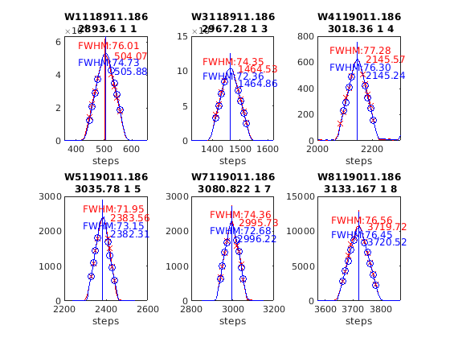
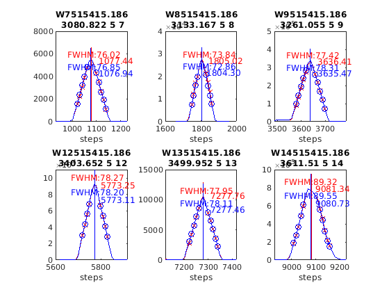

Contents
Brewer Evaluation
clear all;
file_setup='arenos2019_setup';
eval(file_setup);
Cal.n_inst=find(Cal.brw==186);
Cal.file_latex=fullfile('.','latex',Cal.brw_str{Cal.n_inst});
Cal.dir_figs=fullfile('latex',filesep(),Cal.brw_str{Cal.n_inst},...
filesep(),[Cal.brw_str{Cal.n_inst},'_figures'],filesep());
mkdir(Cal.dir_figs);
try
save(Cal.file_save,'-Append','Cal');
catch exception
fprintf('Error: %s\n Initializing data for Brewer %s\n',exception.message,Cal.brw_name{Cal.n_inst});
save(Cal.file_save);
end
ans =
logical
1
ans =
1×1 cell array
{'IZO#185'}
ans =
21×9 cell array
Columns 1 through 5
{'TSK#005'} {[ 5]} {[2]} {[0]} {'005'}
{'IOS#017'} {[ 17]} {[2]} {[0]} {'017'}
{'SCO#033'} {[ 33]} {[2]} {[0]} {'033'}
{'MAD#070'} {[ 70]} {[4]} {[0]} {'070'}
{'UM#075' } {[ 75]} {[4]} {[0]} {'075'}
{'MUR#117'} {[117]} {[4]} {[0]} {'117'}
{'UM#126' } {[126]} {[4]} {[0]} {'126'}
{'ARE#150'} {[150]} {[3]} {[0]} {'150'}
{'COR#151'} {[151]} {[4]} {[0]} {'151'}
{'K&Z#158'} {[158]} {[3]} {[0]} {'158'}
{'WRC#163'} {[163]} {[3]} {[0]} {'163'}
{'ZAR#166'} {[166]} {[4]} {[0]} {'166'}
{'UM#172' } {[172]} {[3]} {[0]} {'172'}
{'JAP#174'} {[174]} {[3]} {[0]} {'174'}
{'IZO#185'} {[185]} {[3]} {[0]} {'185'}
{'MAD#186'} {[186]} {[3]} {[0]} {'186'}
{'CAN#190'} {[190]} {[3]} {[0]} {'190'}
{'TAM#201'} {[201]} {[3]} {[0]} {'201'}
{'DNK#202'} {[202]} {[3]} {[0]} {'202'}
{'DNK#228'} {[228]} {[3]} {[0]} {'228'}
{'K&Z#230'} {[230]} {[3]} {[0]} {'230'}
Columns 6 through 9
{'..\005\ICF15117…'} {'..\005\ICF15117…'} {'1857'} {'1838'}
{'..\017\ICF15315…'} {'..\017\ICF15315…'} {'2170'} {'2097'}
{'..\033\ICF15617…'} {'..\033\ICF15617…'} {'2329'} {'2325'}
{'..\070\ICF15617…'} {'..\070\ICF15617…'} {'1700'} {'1700'}
{'..\075\ICF15017…'} {'..\075\ICF15017…'} {'1769'} {'1714'}
{'..\117\icf14915…'} {'..\117\ICF14915…'} {'1536'} {'1612'}
{'..\126\icf15517…'} {'..\126\ICF15517…'} {'1710'} {'1710'}
{'..\150\Icf14915…'} {'..\150\ICF15617…'} {'0322'} {'0325'}
{'..\151\icf15315…'} {'..\151\icf15315…'} {'1198'} {'1835'}
{'..\158\ICF21218…'} {'..\158\ICF21218…'} {'0558'} {'0521'}
{'..\163\ICF17016…'} {'..\163\ICF15017…'} {'0270'} {'0270'}
{'..\166\icf15215…'} {'..\166\ICF15215…'} {'1952'} {'1975'}
{'..\172\ICF15117…'} {'..\172\ICF15117…'} {'0444'} {'0444'}
{'..\174\ICF20718…'} {'..\174\ICF20718…'} {'0605'} {'0605'}
{'..\185\config18…'} {'..\185\config18…'} {'0335'} {'0335'}
{'..\186\ICF14915…'} {'..\186\ICF14915…'} {'0317'} {'0317'}
{'..\190\ICF11419…'} {'..\190\ICF11419…'} {'0410'} {'0410'}
{'..\201\ICF15215…'} {'..\201\ICF15017…'} {'0283'} {'0270'}
{'..\202\ICF15215…'} {'..\202\ICF15017…'} {'0283'} {'0270'}
{'..\228\ICF15017…'} {'..\228\ICF15017…'} {'0242'} {'0242'}
{'..\230\ICF15215…'} {'..\230\ICF15017…'} {'0283'} {'0270'}
XLSREAD unable to read sheet 'Incidencias.075'.
Requested sheet: 'Incidencias.075' not found.
BrewerUM#075
->ERROR
1
~/CODE/campaigns/are2019/bfiles/017/../017/ICF15315.017
->ERROR
2
~/CODE/campaigns/are2019/bfiles/017/../017/ICF15315.017
->ERROR
1
~/CODE/campaigns/are2019/bfiles/150/../150/ICF14915.150
->ERROR
2
~/CODE/campaigns/are2019/bfiles/150/../150/ICF15617.150
->ERROR
1
~/CODE/campaigns/are2019/bfiles/185/../185/CONFIG185.CFG
->ERROR
2
~/CODE/campaigns/are2019/bfiles/185/../185/CONFIG185_A.CFG
->ERROR
1
~/CODE/campaigns/are2019/bfiles/201/../201/ICF15215.201
->ERROR
2
~/CODE/campaigns/are2019/bfiles/201/../201/ICF15017.201
->ERROR
1
~/CODE/campaigns/are2019/bfiles/202/../202/ICF15215.202
->ERROR
1
~/CODE/campaigns/are2019/bfiles/230/../230/ICF15215.230
->ERROR
2
~/CODE/campaigns/are2019/bfiles/230/../230/ICF15017.202
configuration files
close all
[config_def,TCdef,DTdef,ETCdef,A1def,ATdef]=read_icf(Cal.brw_config_files{Cal.n_inst,2});
[config_orig,TCorig,DTorig,ETCorig,A1orig,ATorig]=read_icf(Cal.brw_config_files{Cal.n_inst,1});
Station.OSC=680;
Station.name='';
Station.lat=67;
Station.long=50;
Station.meanozo=350;
cal_step={}; sc_avg={}; sc_raw={}; Args={};
Sun_scan: Before Campaign
close all
[cal_step{1},sc_avg{1},sc_raw{1},Args{1}]=sc_report(Cal.brw_str{Cal.n_inst},Cal.brw_config_files{Cal.n_inst,1},...
'date_range',datenum(Cal.Date.cal_year,1,[1 159]),...
'CSN_orig',config_orig(14),'OSC',Station.OSC,...
'control_flag',1,'residual_limit',35,...
'hg_time',15,'one_flag',1);
186
OK->B11919.186
OK->B12519.186
OK->B12619.186
OK->B12719.186
OK->B12819.186
OK->B12919.186
OK->B13019.186
OK->B13119.186
OK->B13219.186
OK->B13319.186
OK->B13419.186
OK->B13519.186
OK->B13619.186
OK->B13719.186
OK->B13819.186
OK->B13919.186

Sun_scan: Campaign
[cal_step{2},sc_avg{2},sc_raw{2},Args{2}]=sc_report(Cal.brw_str{Cal.n_inst},Cal.brw_config_files{Cal.n_inst,2},...
'date_range',datenum(Cal.Date.cal_year,1,Cal.calibration_days{Cal.n_inst,1}([1 end])),...
'CSN_orig',config_def(14),'OSC',Station.OSC,...
'control_flag',1,'residual_limit',15,...
'hg_time',5,'one_flag',1);
186
ix=sort(findobj('tag','SC_INDIVIDUAL')); figure(ix); set(get(gca,'title'),'FontSize',8);
printfiles_report(ix',Cal.dir_figs,'aux_pattern',ix,'FontSize',.9,'Width',8.5,'Height',7);
ix=sort(findobj('tag','Final_SC_Calculation'));
if length(ix)>1
Width=8; Height=6;
for i=1:length(ix), figure(ix(i)); set(get(gca,'title'),'FontSize',8); end
else
Width=13; Height=8;
end
printfiles_report(ix',Cal.dir_figs,'aux_pattern',ix,'Width',Width,'Height',Height);
close all
naux =
1
naux =
1
Definicion de variables: SC
if length(cal_step)>1
d_p=[length(cal_step)-1 length(cal_step)]; tags={'','new'};
else
d_p=1; tags={'new'};
end
idx=1; cal_step_error={};
for t=d_p
cal_step_error{t}=round(mean([abs(cal_step{t}(2)-cal_step{t}(3)),abs(cal_step{t}(2)-cal_step{t}(4))]));
latexcmd(fullfile(Cal.file_latex,['cal_wavelengthSC',tags{idx},'_',Cal.brw_str{Cal.n_inst}]),...
['\numSC',tags{idx}],size(sc_avg{t},1),...
['\CALCSTEP',tags{idx}],round(cal_step{t}(1)),...
['\calsteperror',tags{idx}],cal_step_error{t});
idx=idx+1;
end
sunscan{Cal.n_inst}.cal_step=cal_step;
sunscan{Cal.n_inst}.cal_step_error=cal_step_error;
sunscan{Cal.n_inst}.sc_avg=sc_avg; sunscan{Cal.n_inst}.sc_raw=sc_raw;
sunscan{Cal.n_inst}.info=Args;
save(Cal.file_save,'-APPEND','sunscan');
dsp calibration
res={}; detail={}; DSP_QUAD={}; QUAD_SUM={}; QUAD_DETAIL={};
CUBIC_SUM={}; CUBIC_DETAIL={}; salida={}; CSN_icf={};
l=dir(fullfile('DSP',[Cal.brw_str{Cal.n_inst},'*']));
ldsp=cellstr(cat(1,l.name));
ldsp=ldsp(end-3:end)
for jj=1:length(ldsp)
if jj==length(ldsp),confign=2; else confign=1; end
try
[res{jj},detail{jj},DSP_QUAD{jj},QUAD_SUM{jj},QUAD_DETAIL{jj},...
CUBIC_SUM{jj},CUBIC_DETAIL{jj},salida{jj},CSN_icf{jj},...
]=dspreport(Cal,'dsp_dir',fullfile('DSP',ldsp{jj}),'config_n',1);
catch
warning(sprintf('Error en %s. DSP: %s',Cal.brw_name{Cal.n_inst},ldsp{jj}));
res{jj}=NaN*ones(15,9,2); detail{jj}=NaN*ones(7,6,15,2); QUAD_DETAIL{jj}=NaN;
end
datefile =
734693
now:W1018911.186
now:W3018911.186
now:W4019011.186
now:W5019011.186
now:W7019011.186
now:W8019011.186
now:W9019011.186
now:W11018911.186
now:W12019011.186
now:W1118911.186
now:W3118911.186
now:W4119011.186
now:W5119011.186
now:W7119011.186
now:W8119011.186
now:W9119011.186
now:W10119011.186
now:W11118911.186
now:W12119011.186
now:W13119011.186
now:W3218911.186
now:W4219011.186
now:W5219011.186
now:W7219011.186
now:W8219011.186
now:W9219011.186
now:W10219011.186
now:W11218911.186
now:W12219011.186
now:W13219011.186
now:W3318911.186
now:W4319011.186
now:W5319011.186
now:W7319011.186
now:W8319011.186
now:W9319011.186
now:W10319011.186
now:W11318911.186
now:W12319011.186
now:W13319011.186
now:W4419011.186
now:W5419011.186
now:W7419011.186
now:W8419011.186
now:W9419011.186
now:W10419011.186
now:W11418911.186
now:W12419011.186
now:W13419011.186
now:W4519011.186
now:W5519011.186
now:W7519011.186
now:W8519011.186
now:W9519011.186
now:W10519011.186
now:W11518911.186
now:W12519011.186
now:W13519011.186
now:W14519011.186
lines_dsp_18911__186
saving alldsp to DSP/186_11_190/alldsp_18911_186.186
eliminamos la linea slit 6 3133.167000 -0.315941
eliminamos la linea slit 5 3080.822000 -0.250526
eliminamos la linea slit 4 2967.280000 0.311318
eliminamos la linea slit 3 2967.280000 0.296676
eliminamos la linea slit 2 3499.952000 -0.311148
eliminamos la linea slit 6 3499.952000 -0.126843
eliminamos la linea slit 5 3499.952000 -0.125621
eliminamos la linea slit 4 3403.652000 0.126889
eliminamos la linea slit 3 3403.652000 0.143402
eliminamos la linea slit 2 3403.652000 -0.203040
eliminamos la linea slit 1 3403.652000 -0.135131
eliminamos la linea slit 6 3018.360000 0.180008
eliminamos la linea slit 5 3133.167000 -0.156142
eliminamos la linea slit 4 3133.167000 -0.146571
eliminamos la linea slit 3 3018.360000 0.145666
eliminamos la linea slit 2 3341.480000 -0.179206
eliminamos la linea slit 1 3261.055000 0.127070
eliminamos la linea slit 6 3080.822000 -0.149282
eliminamos la linea slit 4 3018.360000 0.167767
eliminamos la linea slit 3 3080.822000 -0.132565
eliminamos la linea slit 2 2893.600000 0.122895
eliminamos la linea slit 1 2967.280000 -0.155486
eliminamos la linea slit 4 3080.822000 -0.130812
saving normaldsp to DSP/186_11_190/dspnorm_18911_186.186 as brewer compatible file
Use polyval(pwl(2,:),wl) for calculating normal wavelengths
Saving ozonecoeffs to DSP/186_11_190/opos18911_186.186
278 WL(A) 3031.45 3062.63 3100.06 3134.42 3167.47 3199.55
Res(A) 11.28 10.97 10.95 11.13 11.04 10.80
O3abs(1/cm) 2.6159 1.7883 1.0067 0.6783 0.3750 0.2966 O3: 0.3469
Daumt O3abs(1/cm) 2.6228 1.7825 0.9986 0.6714 0.3683 0.2966 O3: 0.3568
So2abs(1/cm) 3.5519 5.5278 2.3639 1.9952 1.0455 0.6251
Bremen O3abs(1/cm) 2.6259 1.7859 1.0042 0.6811 0.3734 0.2978 O3: 0.3484
Nicolet 1e4*Rayabs(1/cm) 5054.0 4834.9 4587.5 4374.6 4181.5 4004.5 R: 8.4896
Bates(fix) 1e4*Rayabs(1/cm) 0.0 4870.0 4620.0 4410.0 4220.0 4040.0 R: -1.0000
Bodhaine 1e4*Rayabs(1/cm) 5050.5 4832.9 4587.0 4375.2 4183.1 4006.8 R: 8.1205
I0(mW m^-2nm^-1) 11717.79 9412.60 7342.84 4927.42 4082.57 3246.69 ETC: 1417
Ozone offset due to Rayleigh (RayCOeff/O3Coeff): -2.4 DU
Ozone offset due to Rayleigh (Bodhaine): -2.6 DU
Ratio Ozone for So2(A3)= 1.1627, So2/O3(A2)= 2.6982
O3 factor from Bass & Paur to Daumont = 0.9722
O3 factor from Bass & Paur to Bremen = 0.9958
279 WL(A) 3031.52 3062.70 3100.13 3134.49 3167.54 3199.62
Res(A) 11.28 10.97 10.95 11.13 11.04 10.80
O3abs(1/cm) 2.6130 1.7868 1.0064 0.6781 0.3749 0.2963 O3: 0.3461
Daumt O3abs(1/cm) 2.6200 1.7812 0.9982 0.6714 0.3683 0.2963 O3: 0.3561
So2abs(1/cm) 3.5329 5.5535 2.3706 1.9840 1.0467 0.6231
Bremen O3abs(1/cm) 2.6232 1.7844 1.0038 0.6810 0.3734 0.2975 O3: 0.3476
Nicolet 1e4*Rayabs(1/cm) 5053.4 4834.4 4587.1 4374.2 4181.1 4004.1 R: 8.4884
Bates(fix) 1e4*Rayabs(1/cm) 0.0 4870.0 4620.0 4410.0 4220.0 4040.0 R: -1.0000
Bodhaine 1e4*Rayabs(1/cm) 5050.0 4832.4 4586.6 4374.8 4182.7 4006.4 R: 8.1244
I0(mW m^-2nm^-1) 11711.52 9406.10 7318.36 4923.87 4072.57 3240.68 ETC: 1406
Ozone offset due to Rayleigh (RayCOeff/O3Coeff): -2.5 DU
Ozone offset due to Rayleigh (Bodhaine): -2.6 DU
Ratio Ozone for So2(A3)= 1.1602, So2/O3(A2)= 2.7162
O3 factor from Bass & Paur to Daumont = 0.9719
O3 factor from Bass & Paur to Bremen = 0.9956
280 WL(A) 3031.60 3062.77 3100.20 3134.56 3167.61 3199.69
Res(A) 11.28 10.97 10.95 11.13 11.04 10.80
O3abs(1/cm) 2.6102 1.7853 1.0061 0.6780 0.3749 0.2958 O3: 0.3451
Daumt O3abs(1/cm) 2.6173 1.7798 0.9979 0.6713 0.3682 0.2960 O3: 0.3553
So2abs(1/cm) 3.5139 5.5793 2.3780 1.9725 1.0480 0.6210
Bremen O3abs(1/cm) 2.6205 1.7830 1.0035 0.6810 0.3734 0.2972 O3: 0.3468
Nicolet 1e4*Rayabs(1/cm) 5052.9 4833.9 4586.6 4373.7 4180.7 4003.7 R: 8.4872
Bates(fix) 1e4*Rayabs(1/cm) 0.0 4870.0 4620.0 4410.0 4220.0 4040.0 R: -1.0000
Bodhaine 1e4*Rayabs(1/cm) 5049.4 4831.9 4586.1 4374.4 4182.3 4006.0 R: 8.1234
I0(mW m^-2nm^-1) 11705.26 9399.61 7294.01 4919.93 4062.58 3230.85 ETC: 1389
Ozone offset due to Rayleigh (RayCOeff/O3Coeff): -2.5 DU
Ozone offset due to Rayleigh (Bodhaine): -2.6 DU
Ratio Ozone for So2(A3)= 1.1573, So2/O3(A2)= 2.7347
O3 factor from Bass & Paur to Daumont = 0.9713
O3 factor from Bass & Paur to Bremen = 0.9952
281 WL(A) 3031.67 3062.85 3100.28 3134.64 3167.69 3199.76
Res(A) 11.28 10.97 10.95 11.13 11.04 10.80
O3abs(1/cm) 2.6074 1.7838 1.0058 0.6778 0.3749 0.2954 O3: 0.3441
Daumt O3abs(1/cm) 2.6145 1.7784 0.9975 0.6713 0.3682 0.2957 O3: 0.3545
So2abs(1/cm) 3.4950 5.6032 2.3854 1.9610 1.0492 0.6189
Bremen O3abs(1/cm) 2.6179 1.7815 1.0031 0.6809 0.3733 0.2968 O3: 0.3459
Nicolet 1e4*Rayabs(1/cm) 5052.4 4833.4 4586.2 4373.3 4180.3 4003.4 R: 8.4860
Bates(fix) 1e4*Rayabs(1/cm) 0.0 4870.0 4620.0 4410.0 4220.0 4040.0 R: -1.0000
Bodhaine 1e4*Rayabs(1/cm) 5048.9 4831.4 4585.7 4374.0 4181.9 4005.6 R: 8.1164
I0(mW m^-2nm^-1) 11699.00 9393.14 7269.80 4915.99 4052.62 3221.05 ETC: 1372
Ozone offset due to Rayleigh (RayCOeff/O3Coeff): -2.5 DU
Ozone offset due to Rayleigh (Bodhaine): -2.6 DU
Ratio Ozone for So2(A3)= 1.1543, So2/O3(A2)= 2.7522
O3 factor from Bass & Paur to Daumont = 0.9708
O3 factor from Bass & Paur to Bremen = 0.9948
282 WL(A) 3031.75 3062.92 3100.35 3134.71 3167.76 3199.83
Res(A) 11.28 10.97 10.95 11.13 11.04 10.80
O3abs(1/cm) 2.6049 1.7823 1.0055 0.6776 0.3750 0.2949 O3: 0.3431
Daumt O3abs(1/cm) 2.6118 1.7770 0.9972 0.6712 0.3682 0.2953 O3: 0.3537
So2abs(1/cm) 3.4766 5.6265 2.3927 1.9495 1.0505 0.6167
Bremen O3abs(1/cm) 2.6153 1.7800 1.0027 0.6807 0.3733 0.2965 O3: 0.3451
Nicolet 1e4*Rayabs(1/cm) 5051.8 4832.9 4585.7 4372.9 4179.9 4003.0 R: 8.4848
Bates(fix) 1e4*Rayabs(1/cm) 0.0 4870.0 4620.0 4410.0 4220.0 4040.0 R: -1.0000
Bodhaine 1e4*Rayabs(1/cm) 5048.4 4830.9 4585.2 4373.5 4181.5 4005.3 R: 8.1185
I0(mW m^-2nm^-1) 11692.76 9386.67 7245.72 4912.06 4042.68 3211.27 ETC: 1355
Ozone offset due to Rayleigh (RayCOeff/O3Coeff): -2.5 DU
Ozone offset due to Rayleigh (Bodhaine): -2.7 DU
Ratio Ozone for So2(A3)= 1.1511, So2/O3(A2)= 2.7694
O3 factor from Bass & Paur to Daumont = 0.9701
O3 factor from Bass & Paur to Bremen = 0.9943
283 WL(A) 3031.82 3062.99 3100.42 3134.78 3167.83 3199.90
Res(A) 11.28 10.97 10.95 11.12 11.04 10.80
O3abs(1/cm) 2.6024 1.7808 1.0051 0.6773 0.3750 0.2944 O3: 0.3420
Daumt O3abs(1/cm) 2.6092 1.7756 0.9968 0.6711 0.3682 0.2950 O3: 0.3528
So2abs(1/cm) 3.4600 5.6489 2.4002 1.9380 1.0518 0.6145
Bremen O3abs(1/cm) 2.6127 1.7785 1.0024 0.6806 0.3734 0.2961 O3: 0.3441
Nicolet 1e4*Rayabs(1/cm) 5051.3 4832.4 4585.2 4372.4 4179.5 4002.6 R: 8.4835
Bates(fix) 1e4*Rayabs(1/cm) 0.0 4870.0 4620.0 4410.0 4220.0 4040.0 R: -1.0000
Bodhaine 1e4*Rayabs(1/cm) 5047.8 4830.4 4584.8 4373.1 4181.1 4004.9 R: 8.1210
I0(mW m^-2nm^-1) 11686.52 9380.21 7221.77 4908.13 4032.76 3201.51 ETC: 1338
Ozone offset due to Rayleigh (RayCOeff/O3Coeff): -2.5 DU
Ozone offset due to Rayleigh (Bodhaine): -2.7 DU
Ratio Ozone for So2(A3)= 1.1479, So2/O3(A2)= 2.7859
O3 factor from Bass & Paur to Daumont = 0.9695
O3 factor from Bass & Paur to Bremen = 0.9938
284 WL(A) 3031.89 3063.07 3100.49 3134.85 3167.90 3199.97
Res(A) 11.28 10.97 10.95 11.12 11.04 10.80
O3abs(1/cm) 2.5998 1.7792 1.0049 0.6771 0.3750 0.2939 O3: 0.3410
Daumt O3abs(1/cm) 2.6065 1.7742 0.9965 0.6710 0.3682 0.2946 O3: 0.3518
So2abs(1/cm) 3.4436 5.6713 2.4083 1.9263 1.0530 0.6123
Bremen O3abs(1/cm) 2.6102 1.7769 1.0020 0.6804 0.3734 0.2957 O3: 0.3432
Nicolet 1e4*Rayabs(1/cm) 5050.8 4831.9 4584.8 4372.0 4179.1 4002.2 R: 8.4823
Bates(fix) 1e4*Rayabs(1/cm) 0.0 4870.0 4620.0 4410.0 4220.0 4040.0 R: -1.0000
Bodhaine 1e4*Rayabs(1/cm) 5047.3 4829.9 4584.3 4372.7 4180.7 4004.5 R: 8.1158
I0(mW m^-2nm^-1) 11680.30 9373.75 7200.52 4904.20 4022.87 3191.77 ETC: 1324
Ozone offset due to Rayleigh (RayCOeff/O3Coeff): -2.5 DU
Ozone offset due to Rayleigh (Bodhaine): -2.7 DU
Ratio Ozone for So2(A3)= 1.1447, So2/O3(A2)= 2.8026
O3 factor from Bass & Paur to Daumont = 0.9693
O3 factor from Bass & Paur to Bremen = 0.9937
285 WL(A) 3031.97 3063.14 3100.57 3134.92 3167.97 3200.04
Res(A) 11.28 10.97 10.95 11.12 11.04 10.80
O3abs(1/cm) 2.5971 1.7775 1.0046 0.6768 0.3750 0.2935 O3: 0.3400
Daumt O3abs(1/cm) 2.6039 1.7727 0.9961 0.6708 0.3682 0.2942 O3: 0.3508
So2abs(1/cm) 3.4273 5.6921 2.4165 1.9145 1.0542 0.6101
Bremen O3abs(1/cm) 2.6077 1.7754 1.0017 0.6802 0.3734 0.2953 O3: 0.3421
Nicolet 1e4*Rayabs(1/cm) 5050.2 4831.4 4584.3 4371.6 4178.7 4001.9 R: 8.4811
Bates(fix) 1e4*Rayabs(1/cm) 0.0 4870.0 4620.0 4410.0 4220.0 4040.0 R: -1.0000
Bodhaine 1e4*Rayabs(1/cm) 5046.8 4829.4 4583.8 4372.3 4180.3 4004.1 R: 8.1127
I0(mW m^-2nm^-1) 11674.08 9367.31 7186.28 4900.28 4012.99 3182.05 ETC: 1317
Ozone offset due to Rayleigh (RayCOeff/O3Coeff): -2.5 DU
Ozone offset due to Rayleigh (Bodhaine): -2.7 DU
Ratio Ozone for So2(A3)= 1.1415, So2/O3(A2)= 2.8180
O3 factor from Bass & Paur to Daumont = 0.9691
O3 factor from Bass & Paur to Bremen = 0.9938
286 WL(A) 3032.04 3063.21 3100.64 3134.99 3168.04 3200.11
Res(A) 11.28 10.97 10.95 11.12 11.04 10.80
O3abs(1/cm) 2.5945 1.7759 1.0043 0.6764 0.3751 0.2930 O3: 0.3390
Daumt O3abs(1/cm) 2.6014 1.7712 0.9958 0.6707 0.3682 0.2938 O3: 0.3498
So2abs(1/cm) 3.4115 5.7120 2.4246 1.9029 1.0554 0.6078
Bremen O3abs(1/cm) 2.6052 1.7738 1.0014 0.6800 0.3735 0.2949 O3: 0.3411
Nicolet 1e4*Rayabs(1/cm) 5049.7 4830.9 4583.9 4371.2 4178.3 4001.5 R: 8.4799
Bates(fix) 1e4*Rayabs(1/cm) 0.0 4870.0 4620.0 4410.0 4220.0 4040.0 R: -1.0000
Bodhaine 1e4*Rayabs(1/cm) 5046.2 4828.9 4583.4 4371.8 4179.9 4003.8 R: 8.1166
I0(mW m^-2nm^-1) 11667.87 9360.88 7172.43 4896.36 4003.14 3172.36 ETC: 1310
Ozone offset due to Rayleigh (RayCOeff/O3Coeff): -2.5 DU
Ozone offset due to Rayleigh (Bodhaine): -2.7 DU
Ratio Ozone for So2(A3)= 1.1381, So2/O3(A2)= 2.8327
O3 factor from Bass & Paur to Daumont = 0.9690
O3 factor from Bass & Paur to Bremen = 0.9938
287 WL(A) 3032.12 3063.29 3100.71 3135.06 3168.11 3200.18
Res(A) 11.28 10.97 10.95 11.12 11.04 10.80
O3abs(1/cm) 2.5918 1.7742 1.0040 0.6760 0.3752 0.2924 O3: 0.3378
Daumt O3abs(1/cm) 2.5988 1.7697 0.9954 0.6705 0.3683 0.2934 O3: 0.3487
So2abs(1/cm) 3.3974 5.7309 2.4329 1.8912 1.0567 0.6054
Bremen O3abs(1/cm) 2.6027 1.7722 1.0010 0.6798 0.3735 0.2945 O3: 0.3400
Nicolet 1e4*Rayabs(1/cm) 5049.2 4830.4 4583.4 4370.7 4177.9 4001.1 R: 8.4787
Bates(fix) 1e4*Rayabs(1/cm) 0.0 4870.0 4620.0 4410.0 4220.0 4040.0 R: -1.0000
Bodhaine 1e4*Rayabs(1/cm) 5045.7 4828.4 4582.9 4371.4 4179.5 4003.4 R: 8.1154
I0(mW m^-2nm^-1) 11661.67 9354.46 7158.96 4892.44 3993.31 3162.68 ETC: 1304
Ozone offset due to Rayleigh (RayCOeff/O3Coeff): -2.5 DU
Ozone offset due to Rayleigh (Bodhaine): -2.7 DU
Ratio Ozone for So2(A3)= 1.1344, So2/O3(A2)= 2.8474
O3 factor from Bass & Paur to Daumont = 0.9686
O3 factor from Bass & Paur to Bremen = 0.9935
288 WL(A) 3032.19 3063.36 3100.78 3135.14 3168.18 3200.25
Res(A) 11.28 10.97 10.95 11.12 11.04 10.80
O3abs(1/cm) 2.5893 1.7725 1.0037 0.6756 0.3752 0.2919 O3: 0.3365
Daumt O3abs(1/cm) 2.5963 1.7682 0.9951 0.6703 0.3683 0.2930 O3: 0.3476
So2abs(1/cm) 3.3835 5.7497 2.4417 1.8795 1.0578 0.6030
Bremen O3abs(1/cm) 2.6003 1.7705 1.0007 0.6795 0.3736 0.2940 O3: 0.3388
Nicolet 1e4*Rayabs(1/cm) 5048.6 4829.9 4582.9 4370.3 4177.5 4000.7 R: 8.4775
Bates(fix) 1e4*Rayabs(1/cm) 0.0 4870.0 4620.0 4410.0 4220.0 4040.0 R: -1.0000
Bodhaine 1e4*Rayabs(1/cm) 5045.2 4827.9 4582.5 4371.0 4179.1 4003.0 R: 8.1083
I0(mW m^-2nm^-1) 11655.48 9348.05 7142.47 4888.53 3983.50 3153.03 ETC: 1295
Ozone offset due to Rayleigh (RayCOeff/O3Coeff): -2.5 DU
Ozone offset due to Rayleigh (Bodhaine): -2.7 DU
Ratio Ozone for So2(A3)= 1.1305, So2/O3(A2)= 2.8627
O3 factor from Bass & Paur to Daumont = 0.9681
O3 factor from Bass & Paur to Bremen = 0.9931
saving powfiu7 to DSP/186_11_190/dsp_18911_186.186
freecoef =
4
freecoef =
9
freecoef =
9
freecoef =
9
freecoef =
9
freecoef =
9
freecoef =
9
freecoef =
9
freecoef =
9
freecoef =
9
saving data to file:DSP/186_11_190/dsp_18911_186.186
Use brstps2 to calculate steps and wavelengths
Saving ozonecoeffs to DSP/186_11_190/opos_pow7_18911_186.186
278 WL(A) 3031.59 3062.67 3100.19 3134.67 3167.66 3199.68
Res(A) 11.26 10.98 10.97 11.13 11.03 10.79
O3abs(1/cm) 2.6104 1.7874 1.0061 0.6776 0.3749 0.2959 O3: 0.3455
Daumt O3abs(1/cm) 2.6175 1.7817 0.9980 0.6712 0.3682 0.2960 O3: 0.3556
So2abs(1/cm) 3.5150 5.5432 2.3765 1.9550 1.0488 0.6212
Bremen O3abs(1/cm) 2.6208 1.7850 1.0036 0.6808 0.3733 0.2972 O3: 0.3471
Nicolet 1e4*Rayabs(1/cm) 5053.0 4834.6 4586.7 4373.1 4180.5 4003.8 R: 9.5278
Bates(fix) 1e4*Rayabs(1/cm) 0.0 4870.0 4620.0 4410.0 4220.0 4040.0 R: -1.0000
Bodhaine 1e4*Rayabs(1/cm) 5049.5 4832.6 4586.2 4373.7 4182.0 4006.0 R: 9.1550
I0(mW m^-2nm^-1) 11706.15 9408.64 7299.28 4913.98 4056.40 3231.59 ETC: 1412
Ozone offset due to Rayleigh (RayCOeff/O3Coeff): -2.8 DU
Ozone offset due to Rayleigh (Bodhaine): -2.9 DU
Ratio Ozone for So2(A3)= 1.1596, So2/O3(A2)= 2.6960
O3 factor from Bass & Paur to Daumont = 0.9715
O3 factor from Bass & Paur to Bremen = 0.9953
279 WL(A) 3031.66 3062.74 3100.26 3134.74 3167.73 3199.75
Res(A) 11.26 10.98 10.97 11.13 11.03 10.79
O3abs(1/cm) 2.6077 1.7859 1.0058 0.6774 0.3749 0.2954 O3: 0.3445
Daumt O3abs(1/cm) 2.6148 1.7803 0.9976 0.6711 0.3682 0.2957 O3: 0.3548
So2abs(1/cm) 3.4961 5.5690 2.3839 1.9435 1.0500 0.6191
Bremen O3abs(1/cm) 2.6181 1.7835 1.0032 0.6806 0.3733 0.2969 O3: 0.3463
Nicolet 1e4*Rayabs(1/cm) 5052.4 4834.1 4586.3 4372.7 4180.1 4003.4 R: 9.5254
Bates(fix) 1e4*Rayabs(1/cm) 0.0 4870.0 4620.0 4410.0 4220.0 4040.0 R: -1.0000
Bodhaine 1e4*Rayabs(1/cm) 5049.0 4832.1 4585.8 4373.3 4181.6 4005.7 R: 9.1555
I0(mW m^-2nm^-1) 11699.89 9402.15 7275.14 4910.05 4046.45 3221.77 ETC: 1395
Ozone offset due to Rayleigh (RayCOeff/O3Coeff): -2.8 DU
Ozone offset due to Rayleigh (Bodhaine): -2.9 DU
Ratio Ozone for So2(A3)= 1.1566, So2/O3(A2)= 2.7148
O3 factor from Bass & Paur to Daumont = 0.9709
O3 factor from Bass & Paur to Bremen = 0.9949
280 WL(A) 3031.74 3062.82 3100.33 3134.82 3167.80 3199.82
Res(A) 11.26 10.98 10.97 11.13 11.03 10.79
O3abs(1/cm) 2.6051 1.7844 1.0055 0.6772 0.3750 0.2950 O3: 0.3434
Daumt O3abs(1/cm) 2.6121 1.7790 0.9973 0.6710 0.3682 0.2954 O3: 0.3540
So2abs(1/cm) 3.4777 5.5938 2.3912 1.9320 1.0513 0.6169
Bremen O3abs(1/cm) 2.6155 1.7821 1.0028 0.6805 0.3733 0.2965 O3: 0.3454
Nicolet 1e4*Rayabs(1/cm) 5051.9 4833.6 4585.8 4372.2 4179.7 4003.0 R: 9.5230
Bates(fix) 1e4*Rayabs(1/cm) 0.0 4870.0 4620.0 4410.0 4220.0 4040.0 R: -1.0000
Bodhaine 1e4*Rayabs(1/cm) 5048.4 4831.6 4585.3 4372.9 4181.2 4005.3 R: 9.1535
I0(mW m^-2nm^-1) 11693.63 9395.67 7251.12 4906.13 4036.52 3211.97 ETC: 1378
Ozone offset due to Rayleigh (RayCOeff/O3Coeff): -2.8 DU
Ozone offset due to Rayleigh (Bodhaine): -3.0 DU
Ratio Ozone for So2(A3)= 1.1534, So2/O3(A2)= 2.7333
O3 factor from Bass & Paur to Daumont = 0.9703
O3 factor from Bass & Paur to Bremen = 0.9944
281 WL(A) 3031.81 3062.89 3100.40 3134.89 3167.87 3199.89
Res(A) 11.26 10.98 10.97 11.13 11.03 10.79
O3abs(1/cm) 2.6026 1.7829 1.0052 0.6769 0.3750 0.2945 O3: 0.3424
Daumt O3abs(1/cm) 2.6094 1.7776 0.9969 0.6709 0.3682 0.2950 O3: 0.3531
So2abs(1/cm) 3.4610 5.6173 2.3987 1.9201 1.0525 0.6148
Bremen O3abs(1/cm) 2.6130 1.7806 1.0025 0.6803 0.3734 0.2962 O3: 0.3444
Nicolet 1e4*Rayabs(1/cm) 5051.4 4833.0 4585.4 4371.8 4179.3 4002.6 R: 9.5207
Bates(fix) 1e4*Rayabs(1/cm) 0.0 4870.0 4620.0 4410.0 4220.0 4040.0 R: -1.0000
Bodhaine 1e4*Rayabs(1/cm) 5047.9 4831.1 4584.9 4372.5 4180.8 4004.9 R: 9.1484
I0(mW m^-2nm^-1) 11687.39 9389.19 7227.24 4902.21 4026.61 3202.19 ETC: 1361
Ozone offset due to Rayleigh (RayCOeff/O3Coeff): -2.8 DU
Ozone offset due to Rayleigh (Bodhaine): -3.0 DU
Ratio Ozone for So2(A3)= 1.1502, So2/O3(A2)= 2.7508
O3 factor from Bass & Paur to Daumont = 0.9697
O3 factor from Bass & Paur to Bremen = 0.9940
282 WL(A) 3031.89 3062.96 3100.48 3134.96 3167.94 3199.96
Res(A) 11.26 10.98 10.97 11.13 11.03 10.79
O3abs(1/cm) 2.6001 1.7813 1.0049 0.6766 0.3750 0.2940 O3: 0.3414
Daumt O3abs(1/cm) 2.6068 1.7761 0.9965 0.6707 0.3682 0.2947 O3: 0.3521
So2abs(1/cm) 3.4445 5.6399 2.4067 1.9084 1.0538 0.6125
Bremen O3abs(1/cm) 2.6104 1.7790 1.0021 0.6801 0.3734 0.2958 O3: 0.3435
Nicolet 1e4*Rayabs(1/cm) 5050.8 4832.5 4584.9 4371.4 4178.9 4002.3 R: 9.5183
Bates(fix) 1e4*Rayabs(1/cm) 0.0 4870.0 4620.0 4410.0 4220.0 4040.0 R: -1.0000
Bodhaine 1e4*Rayabs(1/cm) 5047.4 4830.6 4584.4 4372.0 4180.4 4004.6 R: 9.1476
I0(mW m^-2nm^-1) 11681.15 9382.73 7203.49 4898.29 4016.72 3192.43 ETC: 1345
Ozone offset due to Rayleigh (RayCOeff/O3Coeff): -2.8 DU
Ozone offset due to Rayleigh (Bodhaine): -3.0 DU
Ratio Ozone for So2(A3)= 1.1470, So2/O3(A2)= 2.7673
O3 factor from Bass & Paur to Daumont = 0.9695
O3 factor from Bass & Paur to Bremen = 0.9939
283 WL(A) 3031.96 3063.04 3100.55 3135.03 3168.01 3200.03
Res(A) 11.26 10.98 10.97 11.13 11.03 10.79
O3abs(1/cm) 2.5974 1.7798 1.0046 0.6762 0.3751 0.2935 O3: 0.3404
Daumt O3abs(1/cm) 2.6042 1.7747 0.9962 0.6705 0.3682 0.2943 O3: 0.3511
So2abs(1/cm) 3.4282 5.6623 2.4149 1.8967 1.0550 0.6103
Bremen O3abs(1/cm) 2.6079 1.7775 1.0018 0.6799 0.3734 0.2954 O3: 0.3425
Nicolet 1e4*Rayabs(1/cm) 5050.3 4832.0 4584.4 4370.9 4178.5 4001.9 R: 9.5159
Bates(fix) 1e4*Rayabs(1/cm) 0.0 4870.0 4620.0 4410.0 4220.0 4040.0 R: -1.0000
Bodhaine 1e4*Rayabs(1/cm) 5046.8 4830.1 4584.0 4371.6 4180.0 4004.2 R: 9.1472
I0(mW m^-2nm^-1) 11674.93 9376.28 7187.84 4894.38 4006.85 3182.70 ETC: 1336
Ozone offset due to Rayleigh (RayCOeff/O3Coeff): -2.8 DU
Ozone offset due to Rayleigh (Bodhaine): -3.0 DU
Ratio Ozone for So2(A3)= 1.1439, So2/O3(A2)= 2.7838
O3 factor from Bass & Paur to Daumont = 0.9695
O3 factor from Bass & Paur to Bremen = 0.9941
284 WL(A) 3032.03 3063.11 3100.62 3135.10 3168.08 3200.10
Res(A) 11.26 10.98 10.97 11.13 11.03 10.79
O3abs(1/cm) 2.5947 1.7782 1.0043 0.6758 0.3751 0.2931 O3: 0.3394
Daumt O3abs(1/cm) 2.6016 1.7733 0.9958 0.6703 0.3683 0.2939 O3: 0.3501
So2abs(1/cm) 3.4123 5.6840 2.4230 1.8851 1.0562 0.6080
Bremen O3abs(1/cm) 2.6054 1.7760 1.0014 0.6796 0.3735 0.2950 O3: 0.3414
Nicolet 1e4*Rayabs(1/cm) 5049.8 4831.5 4584.0 4370.5 4178.1 4001.5 R: 9.5135
Bates(fix) 1e4*Rayabs(1/cm) 0.0 4870.0 4620.0 4410.0 4220.0 4040.0 R: -1.0000
Bodhaine 1e4*Rayabs(1/cm) 5046.3 4829.6 4583.5 4371.2 4179.7 4003.8 R: 9.1424
I0(mW m^-2nm^-1) 11668.71 9369.84 7173.96 4890.47 3997.00 3172.98 ETC: 1329
Ozone offset due to Rayleigh (RayCOeff/O3Coeff): -2.8 DU
Ozone offset due to Rayleigh (Bodhaine): -3.0 DU
Ratio Ozone for So2(A3)= 1.1404, So2/O3(A2)= 2.8003
O3 factor from Bass & Paur to Daumont = 0.9693
O3 factor from Bass & Paur to Bremen = 0.9940
285 WL(A) 3032.11 3063.18 3100.69 3135.17 3168.15 3200.17
Res(A) 11.26 10.98 10.97 11.13 11.03 10.78
O3abs(1/cm) 2.5920 1.7765 1.0040 0.6754 0.3752 0.2925 O3: 0.3382
Daumt O3abs(1/cm) 2.5991 1.7718 0.9955 0.6701 0.3683 0.2935 O3: 0.3490
So2abs(1/cm) 3.3982 5.7041 2.4312 1.8731 1.0574 0.6056
Bremen O3abs(1/cm) 2.6029 1.7744 1.0011 0.6793 0.3735 0.2945 O3: 0.3403
Nicolet 1e4*Rayabs(1/cm) 5049.2 4831.0 4583.5 4370.1 4177.7 4001.1 R: 9.5112
Bates(fix) 1e4*Rayabs(1/cm) 0.0 4870.0 4620.0 4410.0 4220.0 4040.0 R: -1.0000
Bodhaine 1e4*Rayabs(1/cm) 5045.8 4829.1 4583.0 4370.7 4179.3 4003.4 R: 9.1401
I0(mW m^-2nm^-1) 11662.50 9363.40 7160.45 4886.56 3987.18 3163.29 ETC: 1323
Ozone offset due to Rayleigh (RayCOeff/O3Coeff): -2.8 DU
Ozone offset due to Rayleigh (Bodhaine): -3.0 DU
Ratio Ozone for So2(A3)= 1.1368, So2/O3(A2)= 2.8159
O3 factor from Bass & Paur to Daumont = 0.9689
O3 factor from Bass & Paur to Bremen = 0.9938
286 WL(A) 3032.18 3063.26 3100.76 3135.25 3168.22 3200.24
Res(A) 11.26 10.97 10.97 11.13 11.03 10.78
O3abs(1/cm) 2.5895 1.7749 1.0037 0.6750 0.3753 0.2919 O3: 0.3369
Daumt O3abs(1/cm) 2.5966 1.7703 0.9951 0.6699 0.3684 0.2930 O3: 0.3479
So2abs(1/cm) 3.3842 5.7233 2.4400 1.8613 1.0586 0.6032
Bremen O3abs(1/cm) 2.6005 1.7728 1.0007 0.6790 0.3736 0.2941 O3: 0.3392
Nicolet 1e4*Rayabs(1/cm) 5048.7 4830.5 4583.0 4369.6 4177.3 4000.8 R: 9.5088
Bates(fix) 1e4*Rayabs(1/cm) 0.0 4870.0 4620.0 4410.0 4220.0 4040.0 R: -1.0000
Bodhaine 1e4*Rayabs(1/cm) 5045.2 4828.6 4582.6 4370.3 4178.9 4003.1 R: 9.1398
I0(mW m^-2nm^-1) 11656.30 9356.98 7144.86 4882.66 3977.38 3153.61 ETC: 1314
Ozone offset due to Rayleigh (RayCOeff/O3Coeff): -2.8 DU
Ozone offset due to Rayleigh (Bodhaine): -3.0 DU
Ratio Ozone for So2(A3)= 1.1329, So2/O3(A2)= 2.8313
O3 factor from Bass & Paur to Daumont = 0.9684
O3 factor from Bass & Paur to Bremen = 0.9933
287 WL(A) 3032.26 3063.33 3100.84 3135.32 3168.29 3200.31
Res(A) 11.26 10.97 10.97 11.13 11.03 10.78
O3abs(1/cm) 2.5872 1.7732 1.0034 0.6745 0.3754 0.2913 O3: 0.3356
Daumt O3abs(1/cm) 2.5941 1.7688 0.9948 0.6696 0.3684 0.2926 O3: 0.3468
So2abs(1/cm) 3.3706 5.7421 2.4490 1.8496 1.0597 0.6009
Bremen O3abs(1/cm) 2.5981 1.7712 1.0004 0.6787 0.3737 0.2936 O3: 0.3380
Nicolet 1e4*Rayabs(1/cm) 5048.1 4830.0 4582.6 4369.2 4176.9 4000.4 R: 9.5064
Bates(fix) 1e4*Rayabs(1/cm) 0.0 4870.0 4620.0 4410.0 4220.0 4040.0 R: -1.0000
Bodhaine 1e4*Rayabs(1/cm) 5044.7 4828.1 4582.1 4369.9 4178.5 4002.7 R: 9.1370
I0(mW m^-2nm^-1) 11650.11 9350.56 7128.39 4878.76 3967.60 3143.96 ETC: 1305
Ozone offset due to Rayleigh (RayCOeff/O3Coeff): -2.8 DU
Ozone offset due to Rayleigh (Bodhaine): -3.0 DU
Ratio Ozone for So2(A3)= 1.1289, So2/O3(A2)= 2.8469
O3 factor from Bass & Paur to Daumont = 0.9678
O3 factor from Bass & Paur to Bremen = 0.9929
288 WL(A) 3032.33 3063.40 3100.91 3135.39 3168.37 3200.38
Res(A) 11.26 10.97 10.97 11.13 11.03 10.78
O3abs(1/cm) 2.5848 1.7715 1.0030 0.6741 0.3754 0.2907 O3: 0.3343
Daumt O3abs(1/cm) 2.5916 1.7672 0.9944 0.6693 0.3685 0.2921 O3: 0.3456
So2abs(1/cm) 3.3574 5.7604 2.4579 1.8378 1.0609 0.5984
Bremen O3abs(1/cm) 2.5957 1.7695 1.0000 0.6783 0.3738 0.2931 O3: 0.3368
Nicolet 1e4*Rayabs(1/cm) 5047.6 4829.5 4582.1 4368.8 4176.5 4000.0 R: 9.5041
Bates(fix) 1e4*Rayabs(1/cm) 0.0 4870.0 4620.0 4410.0 4220.0 4040.0 R: -1.0000
Bodhaine 1e4*Rayabs(1/cm) 5044.2 4827.6 4581.7 4369.5 4178.1 4002.3 R: 9.1337
I0(mW m^-2nm^-1) 11643.92 9344.16 7111.98 4874.86 3957.84 3134.33 ETC: 1296
Ozone offset due to Rayleigh (RayCOeff/O3Coeff): -2.8 DU
Ozone offset due to Rayleigh (Bodhaine): -3.0 DU
Ratio Ozone for So2(A3)= 1.1249, So2/O3(A2)= 2.8620
O3 factor from Bass & Paur to Daumont = 0.9673
O3 factor from Bass & Paur to Bremen = 0.9925


datefile =
735401
now:W1016613.186
now:W3016613.186
now:W7016613.186
now:W8016613.186
now:W9016613.186
now:W11016613.186
now:W12016613.186
now:W1116613.186
now:W3116613.186
now:W7116613.186
now:W8116613.186
now:W9116613.186
now:W11116613.186
now:W12116613.186
now:W13116613.186
now:W3216613.186
now:W7216613.186
now:W8216613.186
now:W9216613.186
now:W11216613.186
now:W12216613.186
now:W13216613.186
now:W3316613.186
now:W7316613.186
now:W8316613.186
now:W9316613.186
now:W11316613.186
now:W12316613.186
now:W13316613.186
now:W7416613.186
now:W8416613.186
now:W9416613.186
now:W11416613.186
now:W12416613.186
now:W13416613.186
now:W7516613.186
now:W8516613.186
now:W9516613.186
now:W11516613.186
now:W12516613.186
now:W13516613.186
now:W14516613.186
lines_dsp_16613__186
saving alldsp to DSP/186_13_167/alldsp_16613_186.186
eliminamos la linea slit 4 3080.822000 -0.285211
eliminamos la linea slit 2 3499.952000 -0.285926
eliminamos la linea slit 6 3133.167000 -0.143556
eliminamos la linea slit 5 3133.167000 -0.122061
eliminamos la linea slit 4 3499.952000 -0.142703
eliminamos la linea slit 3 3499.952000 -0.145084
eliminamos la linea slit 2 2893.600000 0.167847
eliminamos la linea slit 1 3403.652000 -0.127577
eliminamos la linea slit 1 2967.280000 -0.160149
saving normaldsp to DSP/186_13_167/dspnorm_16613_186.186 as brewer compatible file
Use polyval(pwl(2,:),wl) for calculating normal wavelengths
Saving ozonecoeffs to DSP/186_13_167/opos16613_186.186
278 WL(A) 3031.53 3062.73 3100.08 3134.64 3167.64 3199.61
Res(A) 11.18 11.20 10.87 11.28 10.85 10.79
O3abs(1/cm) 2.6125 1.7857 1.0066 0.6773 0.3747 0.2963 O3: 0.3473
Daumt O3abs(1/cm) 2.6195 1.7801 0.9985 0.6709 0.3679 0.2963 O3: 0.3574
So2abs(1/cm) 3.5264 5.5471 2.3650 1.9598 1.0487 0.6233
Bremen O3abs(1/cm) 2.6227 1.7833 1.0040 0.6805 0.3730 0.2975 O3: 0.3489
Nicolet 1e4*Rayabs(1/cm) 5053.4 4834.1 4587.4 4373.3 4180.6 4004.1 R: 10.5395
Bates(fix) 1e4*Rayabs(1/cm) 0.0 4870.0 4620.0 4410.0 4220.0 4040.0 R: -1.0000
Bodhaine 1e4*Rayabs(1/cm) 5049.9 4832.2 4586.9 4373.9 4182.1 4006.4 R: 10.1671
I0(mW m^-2nm^-1) 11712.29 9404.10 7338.36 4916.37 4057.64 3241.52 ETC: 1464
Ozone offset due to Rayleigh (RayCOeff/O3Coeff): -3.0 DU
Ozone offset due to Rayleigh (Bodhaine): -3.2 DU
Ratio Ozone for So2(A3)= 1.1601, So2/O3(A2)= 2.7043
O3 factor from Bass & Paur to Daumont = 0.9717
O3 factor from Bass & Paur to Bremen = 0.9954
279 WL(A) 3031.60 3062.80 3100.16 3134.71 3167.72 3199.68
Res(A) 11.18 11.20 10.87 11.28 10.84 10.79
O3abs(1/cm) 2.6096 1.7842 1.0063 0.6771 0.3747 0.2959 O3: 0.3464
Daumt O3abs(1/cm) 2.6168 1.7788 0.9981 0.6708 0.3679 0.2960 O3: 0.3566
So2abs(1/cm) 3.5070 5.5717 2.3717 1.9486 1.0500 0.6212
Bremen O3abs(1/cm) 2.6201 1.7819 1.0037 0.6804 0.3730 0.2972 O3: 0.3481
Nicolet 1e4*Rayabs(1/cm) 5052.9 4833.6 4586.9 4372.9 4180.2 4003.8 R: 10.5363
Bates(fix) 1e4*Rayabs(1/cm) 0.0 4870.0 4620.0 4410.0 4220.0 4040.0 R: -1.0000
Bodhaine 1e4*Rayabs(1/cm) 5049.4 4831.7 4586.4 4373.5 4181.7 4006.0 R: 10.1635
I0(mW m^-2nm^-1) 11705.93 9397.86 7313.40 4912.57 4047.39 3231.68 ETC: 1447
Ozone offset due to Rayleigh (RayCOeff/O3Coeff): -3.0 DU
Ozone offset due to Rayleigh (Bodhaine): -3.2 DU
Ratio Ozone for So2(A3)= 1.1573, So2/O3(A2)= 2.7217
O3 factor from Bass & Paur to Daumont = 0.9712
O3 factor from Bass & Paur to Bremen = 0.9951
280 WL(A) 3031.68 3062.88 3100.23 3134.78 3167.79 3199.75
Res(A) 11.18 11.20 10.87 11.28 10.84 10.79
O3abs(1/cm) 2.6070 1.7828 1.0060 0.6769 0.3748 0.2954 O3: 0.3453
Daumt O3abs(1/cm) 2.6141 1.7774 0.9977 0.6707 0.3679 0.2957 O3: 0.3558
So2abs(1/cm) 3.4879 5.5958 2.3791 1.9372 1.0512 0.6191
Bremen O3abs(1/cm) 2.6174 1.7804 1.0033 0.6802 0.3731 0.2969 O3: 0.3472
Nicolet 1e4*Rayabs(1/cm) 5052.3 4833.1 4586.5 4372.4 4179.8 4003.4 R: 10.5331
Bates(fix) 1e4*Rayabs(1/cm) 0.0 4870.0 4620.0 4410.0 4220.0 4040.0 R: -1.0000
Bodhaine 1e4*Rayabs(1/cm) 5048.9 4831.2 4586.0 4373.1 4181.3 4005.7 R: 10.1558
I0(mW m^-2nm^-1) 11699.59 9391.63 7288.58 4908.78 4037.15 3221.87 ETC: 1430
Ozone offset due to Rayleigh (RayCOeff/O3Coeff): -3.1 DU
Ozone offset due to Rayleigh (Bodhaine): -3.2 DU
Ratio Ozone for So2(A3)= 1.1542, So2/O3(A2)= 2.7393
O3 factor from Bass & Paur to Daumont = 0.9706
O3 factor from Bass & Paur to Bremen = 0.9946
281 WL(A) 3031.75 3062.95 3100.30 3134.85 3167.86 3199.82
Res(A) 11.18 11.20 10.87 11.28 10.84 10.79
O3abs(1/cm) 2.6044 1.7812 1.0057 0.6766 0.3748 0.2950 O3: 0.3443
Daumt O3abs(1/cm) 2.6114 1.7759 0.9974 0.6706 0.3679 0.2954 O3: 0.3549
So2abs(1/cm) 3.4706 5.6180 2.3866 1.9255 1.0525 0.6170
Bremen O3abs(1/cm) 2.6149 1.7789 1.0030 0.6800 0.3731 0.2965 O3: 0.3463
Nicolet 1e4*Rayabs(1/cm) 5051.8 4832.6 4586.0 4372.0 4179.4 4003.0 R: 10.5298
Bates(fix) 1e4*Rayabs(1/cm) 0.0 4870.0 4620.0 4410.0 4220.0 4040.0 R: -1.0000
Bodhaine 1e4*Rayabs(1/cm) 5048.3 4830.7 4585.5 4372.7 4180.9 4005.3 R: 10.1554
I0(mW m^-2nm^-1) 11693.25 9385.42 7263.89 4904.99 4026.94 3212.08 ETC: 1413
Ozone offset due to Rayleigh (RayCOeff/O3Coeff): -3.1 DU
Ozone offset due to Rayleigh (Bodhaine): -3.2 DU
Ratio Ozone for So2(A3)= 1.1509, So2/O3(A2)= 2.7558
O3 factor from Bass & Paur to Daumont = 0.9700
O3 factor from Bass & Paur to Bremen = 0.9942
282 WL(A) 3031.83 3063.02 3100.37 3134.92 3167.93 3199.89
Res(A) 11.18 11.20 10.87 11.28 10.84 10.79
O3abs(1/cm) 2.6019 1.7795 1.0054 0.6763 0.3748 0.2945 O3: 0.3432
Daumt O3abs(1/cm) 2.6087 1.7745 0.9970 0.6704 0.3679 0.2950 O3: 0.3540
So2abs(1/cm) 3.4538 5.6394 2.3941 1.9137 1.0538 0.6148
Bremen O3abs(1/cm) 2.6123 1.7773 1.0026 0.6798 0.3731 0.2962 O3: 0.3453
Nicolet 1e4*Rayabs(1/cm) 5051.3 4832.1 4585.5 4371.6 4179.0 4002.6 R: 10.5266
Bates(fix) 1e4*Rayabs(1/cm) 0.0 4870.0 4620.0 4410.0 4220.0 4040.0 R: -1.0000
Bodhaine 1e4*Rayabs(1/cm) 5047.8 4830.2 4585.1 4372.2 4180.5 4004.9 R: 10.1546
I0(mW m^-2nm^-1) 11686.93 9379.21 7239.34 4901.20 4016.75 3202.31 ETC: 1396
Ozone offset due to Rayleigh (RayCOeff/O3Coeff): -3.1 DU
Ozone offset due to Rayleigh (Bodhaine): -3.2 DU
Ratio Ozone for So2(A3)= 1.1475, So2/O3(A2)= 2.7720
O3 factor from Bass & Paur to Daumont = 0.9696
O3 factor from Bass & Paur to Bremen = 0.9939
283 WL(A) 3031.90 3063.10 3100.45 3135.00 3168.00 3199.96
Res(A) 11.18 11.20 10.87 11.28 10.84 10.79
O3abs(1/cm) 2.5993 1.7778 1.0051 0.6759 0.3749 0.2940 O3: 0.3422
Daumt O3abs(1/cm) 2.6061 1.7731 0.9967 0.6702 0.3680 0.2947 O3: 0.3530
So2abs(1/cm) 3.4369 5.6609 2.4016 1.9023 1.0550 0.6126
Bremen O3abs(1/cm) 2.6098 1.7758 1.0023 0.6796 0.3732 0.2958 O3: 0.3443
Nicolet 1e4*Rayabs(1/cm) 5050.7 4831.6 4585.1 4371.1 4178.6 4002.3 R: 10.5234
Bates(fix) 1e4*Rayabs(1/cm) 0.0 4870.0 4620.0 4410.0 4220.0 4040.0 R: -1.0000
Bodhaine 1e4*Rayabs(1/cm) 5047.3 4829.7 4584.6 4371.8 4180.1 4004.6 R: 10.1484
I0(mW m^-2nm^-1) 11680.61 9373.01 7216.33 4897.42 4006.59 3192.56 ETC: 1380
Ozone offset due to Rayleigh (RayCOeff/O3Coeff): -3.1 DU
Ozone offset due to Rayleigh (Bodhaine): -3.3 DU
Ratio Ozone for So2(A3)= 1.1440, So2/O3(A2)= 2.7884
O3 factor from Bass & Paur to Daumont = 0.9692
O3 factor from Bass & Paur to Bremen = 0.9937
284 WL(A) 3031.97 3063.17 3100.52 3135.07 3168.07 3200.03
Res(A) 11.18 11.20 10.87 11.28 10.84 10.79
O3abs(1/cm) 2.5967 1.7762 1.0048 0.6755 0.3750 0.2935 O3: 0.3411
Daumt O3abs(1/cm) 2.6035 1.7716 0.9964 0.6700 0.3680 0.2943 O3: 0.3520
So2abs(1/cm) 3.4204 5.6816 2.4098 1.8908 1.0563 0.6103
Bremen O3abs(1/cm) 2.6072 1.7742 1.0019 0.6794 0.3733 0.2954 O3: 0.3433
Nicolet 1e4*Rayabs(1/cm) 5050.2 4831.1 4584.6 4370.7 4178.2 4001.9 R: 10.5201
Bates(fix) 1e4*Rayabs(1/cm) 0.0 4870.0 4620.0 4410.0 4220.0 4040.0 R: -1.0000
Bodhaine 1e4*Rayabs(1/cm) 5046.7 4829.2 4584.1 4371.4 4179.7 4004.2 R: 10.1439
I0(mW m^-2nm^-1) 11674.30 9366.82 7201.52 4893.64 3996.45 3182.83 ETC: 1373
Ozone offset due to Rayleigh (RayCOeff/O3Coeff): -3.1 DU
Ozone offset due to Rayleigh (Bodhaine): -3.3 DU
Ratio Ozone for So2(A3)= 1.1406, So2/O3(A2)= 2.8041
O3 factor from Bass & Paur to Daumont = 0.9691
O3 factor from Bass & Paur to Bremen = 0.9937
285 WL(A) 3032.05 3063.24 3100.59 3135.14 3168.14 3200.10
Res(A) 11.18 11.20 10.87 11.28 10.84 10.78
O3abs(1/cm) 2.5939 1.7746 1.0045 0.6752 0.3750 0.2931 O3: 0.3401
Daumt O3abs(1/cm) 2.6009 1.7701 0.9960 0.6698 0.3681 0.2939 O3: 0.3509
So2abs(1/cm) 3.4056 5.7006 2.4180 1.8790 1.0575 0.6080
Bremen O3abs(1/cm) 2.6048 1.7726 1.0016 0.6791 0.3733 0.2950 O3: 0.3422
Nicolet 1e4*Rayabs(1/cm) 5049.6 4830.6 4584.1 4370.3 4177.8 4001.5 R: 10.5169
Bates(fix) 1e4*Rayabs(1/cm) 0.0 4870.0 4620.0 4410.0 4220.0 4040.0 R: -1.0000
Bodhaine 1e4*Rayabs(1/cm) 5046.2 4828.7 4583.7 4371.0 4179.3 4003.8 R: 10.1444
I0(mW m^-2nm^-1) 11668.00 9360.63 7187.13 4889.86 3986.33 3173.12 ETC: 1367
Ozone offset due to Rayleigh (RayCOeff/O3Coeff): -3.1 DU
Ozone offset due to Rayleigh (Bodhaine): -3.3 DU
Ratio Ozone for So2(A3)= 1.1373, So2/O3(A2)= 2.8180
O3 factor from Bass & Paur to Daumont = 0.9690
O3 factor from Bass & Paur to Bremen = 0.9938
286 WL(A) 3032.12 3063.32 3100.66 3135.21 3168.21 3200.17
Res(A) 11.18 11.20 10.87 11.28 10.84 10.78
O3abs(1/cm) 2.5913 1.7730 1.0042 0.6748 0.3751 0.2925 O3: 0.3389
Daumt O3abs(1/cm) 2.5984 1.7686 0.9957 0.6696 0.3681 0.2935 O3: 0.3498
So2abs(1/cm) 3.3913 5.7186 2.4263 1.8670 1.0587 0.6057
Bremen O3abs(1/cm) 2.6023 1.7710 1.0013 0.6788 0.3734 0.2945 O3: 0.3411
Nicolet 1e4*Rayabs(1/cm) 5049.1 4830.1 4583.7 4369.9 4177.4 4001.1 R: 10.5137
Bates(fix) 1e4*Rayabs(1/cm) 0.0 4870.0 4620.0 4410.0 4220.0 4040.0 R: -1.0000
Bodhaine 1e4*Rayabs(1/cm) 5045.7 4828.2 4583.2 4370.5 4178.9 4003.4 R: 10.1417
I0(mW m^-2nm^-1) 11661.71 9354.46 7173.14 4886.08 3976.24 3163.44 ETC: 1360
Ozone offset due to Rayleigh (RayCOeff/O3Coeff): -3.1 DU
Ozone offset due to Rayleigh (Bodhaine): -3.3 DU
Ratio Ozone for So2(A3)= 1.1336, So2/O3(A2)= 2.8319
O3 factor from Bass & Paur to Daumont = 0.9686
O3 factor from Bass & Paur to Bremen = 0.9935
287 WL(A) 3032.20 3063.39 3100.74 3135.28 3168.28 3200.24
Res(A) 11.18 11.20 10.87 11.28 10.84 10.78
O3abs(1/cm) 2.5889 1.7714 1.0039 0.6744 0.3752 0.2919 O3: 0.3376
Daumt O3abs(1/cm) 2.5959 1.7670 0.9953 0.6693 0.3682 0.2930 O3: 0.3487
So2abs(1/cm) 3.3770 5.7366 2.4347 1.8554 1.0599 0.6033
Bremen O3abs(1/cm) 2.5999 1.7694 1.0009 0.6785 0.3735 0.2941 O3: 0.3399
Nicolet 1e4*Rayabs(1/cm) 5048.6 4829.6 4583.2 4369.4 4177.0 4000.8 R: 10.5105
Bates(fix) 1e4*Rayabs(1/cm) 0.0 4870.0 4620.0 4410.0 4220.0 4040.0 R: -1.0000
Bodhaine 1e4*Rayabs(1/cm) 5045.1 4827.7 4582.8 4370.1 4178.5 4003.1 R: 10.1332
I0(mW m^-2nm^-1) 11655.42 9348.29 7158.17 4882.31 3966.17 3153.77 ETC: 1353
Ozone offset due to Rayleigh (RayCOeff/O3Coeff): -3.1 DU
Ozone offset due to Rayleigh (Bodhaine): -3.3 DU
Ratio Ozone for So2(A3)= 1.1297, So2/O3(A2)= 2.8464
O3 factor from Bass & Paur to Daumont = 0.9681
O3 factor from Bass & Paur to Bremen = 0.9931
288 WL(A) 3032.27 3063.46 3100.81 3135.35 3168.35 3200.31
Res(A) 11.18 11.20 10.87 11.28 10.84 10.78
O3abs(1/cm) 2.5865 1.7696 1.0036 0.6739 0.3753 0.2913 O3: 0.3363
Daumt O3abs(1/cm) 2.5934 1.7655 0.9950 0.6690 0.3683 0.2926 O3: 0.3475
So2abs(1/cm) 3.3632 5.7538 2.4435 1.8440 1.0611 0.6009
Bremen O3abs(1/cm) 2.5975 1.7677 1.0006 0.6781 0.3736 0.2936 O3: 0.3387
Nicolet 1e4*Rayabs(1/cm) 5048.0 4829.1 4582.8 4369.0 4176.6 4000.4 R: 10.5072
Bates(fix) 1e4*Rayabs(1/cm) 0.0 4870.0 4620.0 4410.0 4220.0 4040.0 R: -1.0000
Bodhaine 1e4*Rayabs(1/cm) 5044.6 4827.2 4582.3 4369.7 4178.1 4002.7 R: 10.1343
I0(mW m^-2nm^-1) 11649.15 9342.13 7141.38 4878.54 3956.12 3144.13 ETC: 1344
Ozone offset due to Rayleigh (RayCOeff/O3Coeff): -3.1 DU
Ozone offset due to Rayleigh (Bodhaine): -3.3 DU
Ratio Ozone for So2(A3)= 1.1256, So2/O3(A2)= 2.8609
O3 factor from Bass & Paur to Daumont = 0.9676
O3 factor from Bass & Paur to Bremen = 0.9928
saving powfiu7 to DSP/186_13_167/dsp_16613_186.186
freecoef =
4
freecoef =
9
freecoef =
9
freecoef =
9
freecoef =
9
freecoef =
9
freecoef =
9
freecoef =
9
freecoef =
9
freecoef =
9
saving data to file:DSP/186_13_167/dsp_16613_186.186
Use brstps2 to calculate steps and wavelengths
Saving ozonecoeffs to DSP/186_13_167/opos_pow7_16613_186.186
278 WL(A) 3031.72 3062.81 3100.22 3134.78 3167.77 3199.77
Res(A) 11.17 11.21 10.87 11.27 10.85 10.78
O3abs(1/cm) 2.6055 1.7842 1.0060 0.6769 0.3748 0.2953 O3: 0.3451
Daumt O3abs(1/cm) 2.6125 1.7787 0.9978 0.6707 0.3679 0.2956 O3: 0.3556
So2abs(1/cm) 3.4773 5.5720 2.3779 1.9381 1.0509 0.6184
Bremen O3abs(1/cm) 2.6160 1.7818 1.0034 0.6802 0.3731 0.2968 O3: 0.3470
Nicolet 1e4*Rayabs(1/cm) 5052.0 4833.6 4586.5 4372.5 4179.9 4003.3 R: 10.1711
Bates(fix) 1e4*Rayabs(1/cm) 0.0 4870.0 4620.0 4410.0 4220.0 4040.0 R: -1.0000
Bodhaine 1e4*Rayabs(1/cm) 5048.6 4831.6 4586.0 4373.1 4181.4 4005.6 R: 9.7940
I0(mW m^-2nm^-1) 11696.17 9397.65 7292.46 4908.97 4039.63 3218.67 ETC: 1423
Ozone offset due to Rayleigh (RayCOeff/O3Coeff): -2.9 DU
Ozone offset due to Rayleigh (Bodhaine): -3.1 DU
Ratio Ozone for So2(A3)= 1.1551, So2/O3(A2)= 2.7158
O3 factor from Bass & Paur to Daumont = 0.9704
O3 factor from Bass & Paur to Bremen = 0.9944
279 WL(A) 3031.79 3062.88 3100.29 3134.85 3167.84 3199.84
Res(A) 11.17 11.21 10.87 11.27 10.85 10.78
O3abs(1/cm) 2.6030 1.7827 1.0057 0.6767 0.3748 0.2948 O3: 0.3440
Daumt O3abs(1/cm) 2.6098 1.7773 0.9974 0.6706 0.3679 0.2953 O3: 0.3547
So2abs(1/cm) 3.4604 5.5960 2.3854 1.9263 1.0522 0.6163
Bremen O3abs(1/cm) 2.6134 1.7803 1.0030 0.6801 0.3731 0.2964 O3: 0.3461
Nicolet 1e4*Rayabs(1/cm) 5051.5 4833.1 4586.1 4372.0 4179.5 4002.9 R: 10.1686
Bates(fix) 1e4*Rayabs(1/cm) 0.0 4870.0 4620.0 4410.0 4220.0 4040.0 R: -1.0000
Bodhaine 1e4*Rayabs(1/cm) 5048.0 4831.1 4585.6 4372.7 4181.0 4005.2 R: 9.7973
I0(mW m^-2nm^-1) 11689.83 9391.43 7267.74 4905.17 4029.42 3208.88 ETC: 1406
Ozone offset due to Rayleigh (RayCOeff/O3Coeff): -3.0 DU
Ozone offset due to Rayleigh (Bodhaine): -3.1 DU
Ratio Ozone for So2(A3)= 1.1520, So2/O3(A2)= 2.7334
O3 factor from Bass & Paur to Daumont = 0.9698
O3 factor from Bass & Paur to Bremen = 0.9940
280 WL(A) 3031.87 3062.95 3100.36 3134.92 3167.91 3199.91
Res(A) 11.17 11.21 10.87 11.27 10.85 10.78
O3abs(1/cm) 2.6004 1.7811 1.0054 0.6763 0.3748 0.2943 O3: 0.3430
Daumt O3abs(1/cm) 2.6072 1.7759 0.9971 0.6705 0.3679 0.2949 O3: 0.3538
So2abs(1/cm) 3.4435 5.6182 2.3929 1.9145 1.0535 0.6141
Bremen O3abs(1/cm) 2.6108 1.7788 1.0027 0.6799 0.3731 0.2961 O3: 0.3452
Nicolet 1e4*Rayabs(1/cm) 5051.0 4832.6 4585.6 4371.6 4179.1 4002.5 R: 10.1662
Bates(fix) 1e4*Rayabs(1/cm) 0.0 4870.0 4620.0 4410.0 4220.0 4040.0 R: -1.0000
Bodhaine 1e4*Rayabs(1/cm) 5047.5 4830.6 4585.1 4372.3 4180.6 4004.8 R: 9.7967
I0(mW m^-2nm^-1) 11683.50 9385.21 7243.15 4901.37 4019.24 3199.11 ETC: 1389
Ozone offset due to Rayleigh (RayCOeff/O3Coeff): -3.0 DU
Ozone offset due to Rayleigh (Bodhaine): -3.1 DU
Ratio Ozone for So2(A3)= 1.1487, So2/O3(A2)= 2.7499
O3 factor from Bass & Paur to Daumont = 0.9694
O3 factor from Bass & Paur to Bremen = 0.9938
281 WL(A) 3031.94 3063.03 3100.44 3134.99 3167.98 3199.98
Res(A) 11.17 11.21 10.87 11.27 10.85 10.78
O3abs(1/cm) 2.5978 1.7794 1.0051 0.6760 0.3749 0.2939 O3: 0.3419
Daumt O3abs(1/cm) 2.6046 1.7744 0.9967 0.6703 0.3680 0.2946 O3: 0.3528
So2abs(1/cm) 3.4267 5.6397 2.4004 1.9031 1.0547 0.6119
Bremen O3abs(1/cm) 2.6083 1.7772 1.0023 0.6796 0.3732 0.2957 O3: 0.3441
Nicolet 1e4*Rayabs(1/cm) 5050.4 4832.1 4585.1 4371.2 4178.7 4002.1 R: 10.1637
Bates(fix) 1e4*Rayabs(1/cm) 0.0 4870.0 4620.0 4410.0 4220.0 4040.0 R: -1.0000
Bodhaine 1e4*Rayabs(1/cm) 5047.0 4830.1 4584.7 4371.8 4180.2 4004.4 R: 9.7866
I0(mW m^-2nm^-1) 11677.18 9379.01 7218.98 4897.58 4009.07 3189.37 ETC: 1372
Ozone offset due to Rayleigh (RayCOeff/O3Coeff): -3.0 DU
Ozone offset due to Rayleigh (Bodhaine): -3.2 DU
Ratio Ozone for So2(A3)= 1.1452, So2/O3(A2)= 2.7662
O3 factor from Bass & Paur to Daumont = 0.9691
O3 factor from Bass & Paur to Bremen = 0.9936
282 WL(A) 3032.02 3063.10 3100.51 3135.06 3168.05 3200.05
Res(A) 11.17 11.21 10.87 11.27 10.85 10.78
O3abs(1/cm) 2.5951 1.7777 1.0049 0.6756 0.3750 0.2934 O3: 0.3409
Daumt O3abs(1/cm) 2.6020 1.7730 0.9964 0.6701 0.3680 0.2942 O3: 0.3518
So2abs(1/cm) 3.4112 5.6611 2.4085 1.8917 1.0560 0.6096
Bremen O3abs(1/cm) 2.6058 1.7757 1.0020 0.6794 0.3732 0.2953 O3: 0.3431
Nicolet 1e4*Rayabs(1/cm) 5049.9 4831.6 4584.7 4370.7 4178.3 4001.8 R: 10.1612
Bates(fix) 1e4*Rayabs(1/cm) 0.0 4870.0 4620.0 4410.0 4220.0 4040.0 R: -1.0000
Bodhaine 1e4*Rayabs(1/cm) 5046.4 4829.6 4584.2 4371.4 4179.8 4004.1 R: 9.7876
I0(mW m^-2nm^-1) 11670.87 9372.81 7204.10 4893.79 3998.93 3179.64 ETC: 1365
Ozone offset due to Rayleigh (RayCOeff/O3Coeff): -3.0 DU
Ozone offset due to Rayleigh (Bodhaine): -3.2 DU
Ratio Ozone for So2(A3)= 1.1417, So2/O3(A2)= 2.7824
O3 factor from Bass & Paur to Daumont = 0.9690
O3 factor from Bass & Paur to Bremen = 0.9936
283 WL(A) 3032.09 3063.17 3100.58 3135.13 3168.12 3200.12
Res(A) 11.17 11.21 10.87 11.27 10.85 10.78
O3abs(1/cm) 2.5924 1.7761 1.0046 0.6752 0.3750 0.2929 O3: 0.3398
Daumt O3abs(1/cm) 2.5995 1.7715 0.9961 0.6699 0.3681 0.2938 O3: 0.3508
So2abs(1/cm) 3.3968 5.6817 2.4167 1.8798 1.0572 0.6073
Bremen O3abs(1/cm) 2.6033 1.7741 1.0017 0.6791 0.3733 0.2948 O3: 0.3420
Nicolet 1e4*Rayabs(1/cm) 5049.3 4831.1 4584.2 4370.3 4177.8 4001.4 R: 10.1588
Bates(fix) 1e4*Rayabs(1/cm) 0.0 4870.0 4620.0 4410.0 4220.0 4040.0 R: -1.0000
Bodhaine 1e4*Rayabs(1/cm) 5045.9 4829.1 4583.7 4371.0 4179.4 4003.7 R: 9.7905
I0(mW m^-2nm^-1) 11664.56 9366.62 7189.63 4890.01 3988.82 3169.94 ETC: 1358
Ozone offset due to Rayleigh (RayCOeff/O3Coeff): -3.0 DU
Ozone offset due to Rayleigh (Bodhaine): -3.2 DU
Ratio Ozone for So2(A3)= 1.1383, So2/O3(A2)= 2.7980
O3 factor from Bass & Paur to Daumont = 0.9689
O3 factor from Bass & Paur to Bremen = 0.9937
284 WL(A) 3032.16 3063.25 3100.65 3135.21 3168.19 3200.19
Res(A) 11.16 11.21 10.87 11.26 10.85 10.78
O3abs(1/cm) 2.5900 1.7745 1.0043 0.6749 0.3751 0.2924 O3: 0.3386
Daumt O3abs(1/cm) 2.5969 1.7700 0.9957 0.6696 0.3681 0.2933 O3: 0.3497
So2abs(1/cm) 3.3825 5.7007 2.4250 1.8679 1.0584 0.6049
Bremen O3abs(1/cm) 2.6009 1.7725 1.0013 0.6788 0.3734 0.2944 O3: 0.3409
Nicolet 1e4*Rayabs(1/cm) 5048.8 4830.6 4583.8 4369.9 4177.4 4001.0 R: 10.1563
Bates(fix) 1e4*Rayabs(1/cm) 0.0 4870.0 4620.0 4410.0 4220.0 4040.0 R: -1.0000
Bodhaine 1e4*Rayabs(1/cm) 5045.4 4828.7 4583.3 4370.6 4179.0 4003.3 R: 9.7821
I0(mW m^-2nm^-1) 11658.27 9360.45 7175.58 4886.23 3978.72 3160.25 ETC: 1352
Ozone offset due to Rayleigh (RayCOeff/O3Coeff): -3.0 DU
Ozone offset due to Rayleigh (Bodhaine): -3.2 DU
Ratio Ozone for So2(A3)= 1.1346, So2/O3(A2)= 2.8125
O3 factor from Bass & Paur to Daumont = 0.9685
O3 factor from Bass & Paur to Bremen = 0.9934
285 WL(A) 3032.24 3063.32 3100.73 3135.28 3168.26 3200.26
Res(A) 11.16 11.21 10.87 11.26 10.85 10.78
O3abs(1/cm) 2.5876 1.7729 1.0040 0.6744 0.3752 0.2918 O3: 0.3373
Daumt O3abs(1/cm) 2.5944 1.7685 0.9954 0.6694 0.3682 0.2929 O3: 0.3485
So2abs(1/cm) 3.3683 5.7187 2.4333 1.8563 1.0596 0.6025
Bremen O3abs(1/cm) 2.5985 1.7709 1.0010 0.6785 0.3735 0.2939 O3: 0.3397
Nicolet 1e4*Rayabs(1/cm) 5048.3 4830.1 4583.3 4369.5 4177.0 4000.6 R: 10.1538
Bates(fix) 1e4*Rayabs(1/cm) 0.0 4870.0 4620.0 4410.0 4220.0 4040.0 R: -1.0000
Bodhaine 1e4*Rayabs(1/cm) 5044.8 4828.2 4582.8 4370.1 4178.6 4002.9 R: 9.7781
I0(mW m^-2nm^-1) 11651.99 9354.27 7161.04 4882.45 3968.65 3150.59 ETC: 1345
Ozone offset due to Rayleigh (RayCOeff/O3Coeff): -3.0 DU
Ozone offset due to Rayleigh (Bodhaine): -3.2 DU
Ratio Ozone for So2(A3)= 1.1307, So2/O3(A2)= 2.8270
O3 factor from Bass & Paur to Daumont = 0.9678
O3 factor from Bass & Paur to Bremen = 0.9929
286 WL(A) 3032.31 3063.39 3100.80 3135.35 3168.33 3200.33
Res(A) 11.16 11.21 10.87 11.26 10.85 10.78
O3abs(1/cm) 2.5852 1.7713 1.0037 0.6740 0.3753 0.2911 O3: 0.3360
Daumt O3abs(1/cm) 2.5920 1.7670 0.9950 0.6691 0.3683 0.2924 O3: 0.3473
So2abs(1/cm) 3.3554 5.7367 2.4420 1.8448 1.0608 0.6001
Bremen O3abs(1/cm) 2.5961 1.7693 1.0006 0.6782 0.3736 0.2934 O3: 0.3385
Nicolet 1e4*Rayabs(1/cm) 5047.7 4829.6 4582.8 4369.0 4176.6 4000.3 R: 10.1514
Bates(fix) 1e4*Rayabs(1/cm) 0.0 4870.0 4620.0 4410.0 4220.0 4040.0 R: -1.0000
Bodhaine 1e4*Rayabs(1/cm) 5044.3 4827.7 4582.4 4369.7 4178.2 4002.6 R: 9.7815
I0(mW m^-2nm^-1) 11645.71 9348.11 7144.24 4878.67 3958.61 3140.95 ETC: 1336
Ozone offset due to Rayleigh (RayCOeff/O3Coeff): -3.0 DU
Ozone offset due to Rayleigh (Bodhaine): -3.2 DU
Ratio Ozone for So2(A3)= 1.1268, So2/O3(A2)= 2.8416
O3 factor from Bass & Paur to Daumont = 0.9673
O3 factor from Bass & Paur to Bremen = 0.9925
287 WL(A) 3032.39 3063.47 3100.87 3135.42 3168.41 3200.40
Res(A) 11.16 11.21 10.87 11.26 10.85 10.78
O3abs(1/cm) 2.5828 1.7695 1.0033 0.6734 0.3754 0.2905 O3: 0.3347
Daumt O3abs(1/cm) 2.5895 1.7654 0.9947 0.6687 0.3684 0.2919 O3: 0.3461
So2abs(1/cm) 3.3437 5.7538 2.4511 1.8330 1.0619 0.5977
Bremen O3abs(1/cm) 2.5937 1.7676 1.0003 0.6778 0.3737 0.2929 O3: 0.3373
Nicolet 1e4*Rayabs(1/cm) 5047.2 4829.1 4582.4 4368.6 4176.2 3999.9 R: 10.1489
Bates(fix) 1e4*Rayabs(1/cm) 0.0 4870.0 4620.0 4410.0 4220.0 4040.0 R: -1.0000
Bodhaine 1e4*Rayabs(1/cm) 5043.8 4827.2 4581.9 4369.3 4177.8 4002.2 R: 9.7786
I0(mW m^-2nm^-1) 11639.44 9341.96 7127.50 4874.90 3948.58 3132.21 ETC: 1328
Ozone offset due to Rayleigh (RayCOeff/O3Coeff): -3.0 DU
Ozone offset due to Rayleigh (Bodhaine): -3.2 DU
Ratio Ozone for So2(A3)= 1.1227, So2/O3(A2)= 2.8559
O3 factor from Bass & Paur to Daumont = 0.9670
O3 factor from Bass & Paur to Bremen = 0.9924
288 WL(A) 3032.46 3063.54 3100.94 3135.49 3168.48 3200.47
Res(A) 11.16 11.21 10.87 11.26 10.85 10.78
O3abs(1/cm) 2.5804 1.7677 1.0030 0.6729 0.3755 0.2900 O3: 0.3334
Daumt O3abs(1/cm) 2.5871 1.7638 0.9943 0.6684 0.3685 0.2914 O3: 0.3448
So2abs(1/cm) 3.3320 5.7693 2.4601 1.8210 1.0631 0.5953
Bremen O3abs(1/cm) 2.5914 1.7659 0.9999 0.6774 0.3738 0.2924 O3: 0.3360
Nicolet 1e4*Rayabs(1/cm) 5046.7 4828.6 4581.9 4368.2 4175.8 3999.5 R: 10.1464
Bates(fix) 1e4*Rayabs(1/cm) 0.0 4870.0 4620.0 4410.0 4220.0 4040.0 R: -1.0000
Bodhaine 1e4*Rayabs(1/cm) 5043.3 4826.7 4581.4 4368.8 4177.4 4001.8 R: 9.7702
I0(mW m^-2nm^-1) 11633.19 9335.81 7110.82 4871.12 3938.58 3129.01 ETC: 1330
Ozone offset due to Rayleigh (RayCOeff/O3Coeff): -3.0 DU
Ozone offset due to Rayleigh (Bodhaine): -3.2 DU
Ratio Ozone for So2(A3)= 1.1185, So2/O3(A2)= 2.8693
O3 factor from Bass & Paur to Daumont = 0.9668
O3 factor from Bass & Paur to Bremen = 0.9923


datefile =
736119
now:W7015415.186
now:W8015415.186
now:W9015415.186
now:W12015415.186
now:W7115415.186
now:W8115415.186
now:W9115415.186
now:W12115415.186
now:W13115415.186
now:W7215415.186
now:W8215415.186
now:W9215415.186
now:W12215415.186
now:W13215415.186
now:W7315415.186
now:W8315415.186
now:W9315415.186
now:W12315415.186
now:W13315415.186
now:W7415415.186
now:W8415415.186
now:W9415415.186
now:W12415415.186
now:W13415415.186
now:W7515415.186
now:W8515415.186
now:W9515415.186
now:W12515415.186
now:W13515415.186
now:W14515415.186
lines_dsp_15415__186
saving alldsp to DSP/186_15_155/alldsp_15415_186.186
eliminamos la linea slit 3 3403.652000 0.123061
eliminamos la linea slit 2 3403.652000 0.165104
saving normaldsp to DSP/186_15_155/dspnorm_15415_186.186 as brewer compatible file
Use polyval(pwl(2,:),wl) for calculating normal wavelengths
Saving ozonecoeffs to DSP/186_15_155/opos15415_186.186
278 WL(A) 3031.73 3062.81 3100.18 3134.65 3167.66 3199.56
Res(A) 11.10 11.24 11.02 11.15 11.07 10.63
O3abs(1/cm) 2.6051 1.7841 1.0061 0.6776 0.3750 0.2969 O3: 0.3470
Daumt O3abs(1/cm) 2.6120 1.7786 0.9980 0.6712 0.3682 0.2968 O3: 0.3569
So2abs(1/cm) 3.4724 5.5696 2.3767 1.9581 1.0487 0.6253
Bremen O3abs(1/cm) 2.6155 1.7817 1.0036 0.6808 0.3734 0.2980 O3: 0.3484
Nicolet 1e4*Rayabs(1/cm) 5052.0 4833.6 4586.8 4373.2 4180.5 4004.4 R: 10.5654
Bates(fix) 1e4*Rayabs(1/cm) 0.0 4870.0 4620.0 4410.0 4220.0 4040.0 R: -1.0000
Bodhaine 1e4*Rayabs(1/cm) 5048.5 4831.6 4586.3 4373.9 4182.1 4006.7 R: 10.1898
I0(mW m^-2nm^-1) 11696.15 9397.78 7299.63 4915.14 4056.98 3240.53 ETC: 1426
Ozone offset due to Rayleigh (RayCOeff/O3Coeff): -3.0 DU
Ozone offset due to Rayleigh (Bodhaine): -3.2 DU
Ratio Ozone for So2(A3)= 1.1592, So2/O3(A2)= 2.7314
O3 factor from Bass & Paur to Daumont = 0.9724
O3 factor from Bass & Paur to Bremen = 0.9961
279 WL(A) 3031.80 3062.88 3100.25 3134.72 3167.73 3199.63
Res(A) 11.10 11.24 11.02 11.15 11.07 10.63
O3abs(1/cm) 2.6025 1.7827 1.0058 0.6774 0.3750 0.2965 O3: 0.3462
Daumt O3abs(1/cm) 2.6094 1.7772 0.9977 0.6711 0.3682 0.2965 O3: 0.3561
So2abs(1/cm) 3.4553 5.5935 2.3840 1.9467 1.0499 0.6233
Bremen O3abs(1/cm) 2.6130 1.7802 1.0032 0.6807 0.3734 0.2977 O3: 0.3476
Nicolet 1e4*Rayabs(1/cm) 5051.4 4833.1 4586.3 4372.8 4180.1 4004.0 R: 10.5621
Bates(fix) 1e4*Rayabs(1/cm) 0.0 4870.0 4620.0 4410.0 4220.0 4040.0 R: -1.0000
Bodhaine 1e4*Rayabs(1/cm) 5048.0 4831.1 4585.8 4373.4 4181.7 4006.3 R: 10.1856
I0(mW m^-2nm^-1) 11689.76 9391.60 7275.81 4911.24 4047.11 3235.26 ETC: 1416
Ozone offset due to Rayleigh (RayCOeff/O3Coeff): -3.1 DU
Ozone offset due to Rayleigh (Bodhaine): -3.2 DU
Ratio Ozone for So2(A3)= 1.1566, So2/O3(A2)= 2.7480
O3 factor from Bass & Paur to Daumont = 0.9722
O3 factor from Bass & Paur to Bremen = 0.9960
280 WL(A) 3031.88 3062.95 3100.32 3134.80 3167.80 3199.70
Res(A) 11.10 11.24 11.02 11.15 11.07 10.63
O3abs(1/cm) 2.5999 1.7810 1.0055 0.6772 0.3750 0.2961 O3: 0.3453
Daumt O3abs(1/cm) 2.6068 1.7758 0.9973 0.6710 0.3682 0.2963 O3: 0.3553
So2abs(1/cm) 3.4383 5.6159 2.3913 1.9353 1.0512 0.6212
Bremen O3abs(1/cm) 2.6104 1.7787 1.0029 0.6805 0.3734 0.2974 O3: 0.3468
Nicolet 1e4*Rayabs(1/cm) 5050.9 4832.6 4585.9 4372.3 4179.7 4003.7 R: 10.5588
Bates(fix) 1e4*Rayabs(1/cm) 0.0 4870.0 4620.0 4410.0 4220.0 4040.0 R: -1.0000
Bodhaine 1e4*Rayabs(1/cm) 5047.4 4830.6 4585.4 4373.0 4181.3 4005.9 R: 10.1824
I0(mW m^-2nm^-1) 11683.38 9385.43 7252.13 4907.33 4037.26 3228.67 ETC: 1405
Ozone offset due to Rayleigh (RayCOeff/O3Coeff): -3.1 DU
Ozone offset due to Rayleigh (Bodhaine): -3.2 DU
Ratio Ozone for So2(A3)= 1.1535, So2/O3(A2)= 2.7643
O3 factor from Bass & Paur to Daumont = 0.9718
O3 factor from Bass & Paur to Bremen = 0.9958
281 WL(A) 3031.95 3063.03 3100.39 3134.87 3167.87 3199.77
Res(A) 11.10 11.24 11.02 11.15 11.07 10.63
O3abs(1/cm) 2.5974 1.7793 1.0052 0.6769 0.3750 0.2956 O3: 0.3443
Daumt O3abs(1/cm) 2.6042 1.7744 0.9969 0.6709 0.3682 0.2959 O3: 0.3545
So2abs(1/cm) 3.4212 5.6372 2.3987 1.9235 1.0524 0.6190
Bremen O3abs(1/cm) 2.6079 1.7772 1.0025 0.6803 0.3734 0.2971 O3: 0.3459
Nicolet 1e4*Rayabs(1/cm) 5050.4 4832.1 4585.4 4371.9 4179.3 4003.3 R: 10.5555
Bates(fix) 1e4*Rayabs(1/cm) 0.0 4870.0 4620.0 4410.0 4220.0 4040.0 R: -1.0000
Bodhaine 1e4*Rayabs(1/cm) 5046.9 4830.1 4584.9 4372.6 4180.9 4005.6 R: 10.1800
I0(mW m^-2nm^-1) 11677.01 9379.28 7228.57 4903.44 4027.44 3218.46 ETC: 1388
Ozone offset due to Rayleigh (RayCOeff/O3Coeff): -3.1 DU
Ozone offset due to Rayleigh (Bodhaine): -3.2 DU
Ratio Ozone for So2(A3)= 1.1502, So2/O3(A2)= 2.7803
O3 factor from Bass & Paur to Daumont = 0.9712
O3 factor from Bass & Paur to Bremen = 0.9952
282 WL(A) 3032.02 3063.10 3100.47 3134.94 3167.94 3199.84
Res(A) 11.10 11.24 11.02 11.15 11.07 10.63
O3abs(1/cm) 2.5946 1.7776 1.0049 0.6766 0.3751 0.2952 O3: 0.3433
Daumt O3abs(1/cm) 2.6016 1.7729 0.9966 0.6707 0.3682 0.2956 O3: 0.3536
So2abs(1/cm) 3.4066 5.6583 2.4068 1.9118 1.0536 0.6169
Bremen O3abs(1/cm) 2.6054 1.7756 1.0022 0.6801 0.3734 0.2968 O3: 0.3450
Nicolet 1e4*Rayabs(1/cm) 5049.8 4831.6 4584.9 4371.5 4178.9 4002.9 R: 10.5522
Bates(fix) 1e4*Rayabs(1/cm) 0.0 4870.0 4620.0 4410.0 4220.0 4040.0 R: -1.0000
Bodhaine 1e4*Rayabs(1/cm) 5046.4 4829.7 4584.5 4372.2 4180.5 4005.2 R: 10.1777
I0(mW m^-2nm^-1) 11670.65 9373.13 7205.13 4899.54 4017.64 3208.27 ETC: 1371
Ozone offset due to Rayleigh (RayCOeff/O3Coeff): -3.1 DU
Ozone offset due to Rayleigh (Bodhaine): -3.3 DU
Ratio Ozone for So2(A3)= 1.1469, So2/O3(A2)= 2.7963
O3 factor from Bass & Paur to Daumont = 0.9707
O3 factor from Bass & Paur to Bremen = 0.9949
283 WL(A) 3032.10 3063.17 3100.54 3135.01 3168.01 3199.91
Res(A) 11.10 11.24 11.02 11.15 11.07 10.63
O3abs(1/cm) 2.5920 1.7760 1.0046 0.6763 0.3751 0.2947 O3: 0.3423
Daumt O3abs(1/cm) 2.5991 1.7715 0.9962 0.6706 0.3683 0.2953 O3: 0.3527
So2abs(1/cm) 3.3921 5.6788 2.4148 1.9002 1.0548 0.6147
Bremen O3abs(1/cm) 2.6030 1.7741 1.0018 0.6799 0.3735 0.2964 O3: 0.3441
Nicolet 1e4*Rayabs(1/cm) 5049.3 4831.1 4584.5 4371.1 4178.5 4002.5 R: 10.5489
Bates(fix) 1e4*Rayabs(1/cm) 0.0 4870.0 4620.0 4410.0 4220.0 4040.0 R: -1.0000
Bodhaine 1e4*Rayabs(1/cm) 5045.8 4829.2 4584.0 4371.7 4180.1 4004.8 R: 10.1720
I0(mW m^-2nm^-1) 11664.30 9366.99 7185.74 4895.65 4007.86 3198.11 ETC: 1357
Ozone offset due to Rayleigh (RayCOeff/O3Coeff): -3.1 DU
Ozone offset due to Rayleigh (Bodhaine): -3.3 DU
Ratio Ozone for So2(A3)= 1.1436, So2/O3(A2)= 2.8116
O3 factor from Bass & Paur to Daumont = 0.9704
O3 factor from Bass & Paur to Bremen = 0.9947
284 WL(A) 3032.17 3063.24 3100.61 3135.08 3168.08 3199.98
Res(A) 11.10 11.24 11.02 11.15 11.07 10.63
O3abs(1/cm) 2.5896 1.7745 1.0043 0.6759 0.3751 0.2942 O3: 0.3412
Daumt O3abs(1/cm) 2.5965 1.7700 0.9959 0.6704 0.3683 0.2949 O3: 0.3517
So2abs(1/cm) 3.3777 5.6980 2.4229 1.8886 1.0561 0.6124
Bremen O3abs(1/cm) 2.6005 1.7725 1.0014 0.6797 0.3735 0.2960 O3: 0.3431
Nicolet 1e4*Rayabs(1/cm) 5048.8 4830.6 4584.0 4370.6 4178.1 4002.2 R: 10.5456
Bates(fix) 1e4*Rayabs(1/cm) 0.0 4870.0 4620.0 4410.0 4220.0 4040.0 R: -1.0000
Bodhaine 1e4*Rayabs(1/cm) 5045.3 4828.7 4583.5 4371.3 4179.7 4004.4 R: 10.1708
I0(mW m^-2nm^-1) 11657.96 9360.85 7172.00 4891.76 3998.10 3187.97 ETC: 1350
Ozone offset due to Rayleigh (RayCOeff/O3Coeff): -3.1 DU
Ozone offset due to Rayleigh (Bodhaine): -3.3 DU
Ratio Ozone for So2(A3)= 1.1403, So2/O3(A2)= 2.8258
O3 factor from Bass & Paur to Daumont = 0.9700
O3 factor from Bass & Paur to Bremen = 0.9945
285 WL(A) 3032.24 3063.32 3100.68 3135.15 3168.15 3200.05
Res(A) 11.10 11.24 11.02 11.15 11.07 10.63
O3abs(1/cm) 2.5872 1.7729 1.0040 0.6755 0.3752 0.2937 O3: 0.3401
Daumt O3abs(1/cm) 2.5941 1.7685 0.9955 0.6701 0.3684 0.2945 O3: 0.3507
So2abs(1/cm) 3.3632 5.7159 2.4310 1.8767 1.0573 0.6102
Bremen O3abs(1/cm) 2.5981 1.7709 1.0011 0.6794 0.3736 0.2956 O3: 0.3421
Nicolet 1e4*Rayabs(1/cm) 5048.2 4830.1 4583.6 4370.2 4177.7 4001.8 R: 10.5423
Bates(fix) 1e4*Rayabs(1/cm) 0.0 4870.0 4620.0 4410.0 4220.0 4040.0 R: -1.0000
Bodhaine 1e4*Rayabs(1/cm) 5044.8 4828.2 4583.1 4370.9 4179.3 4004.1 R: 10.1677
I0(mW m^-2nm^-1) 11651.62 9354.73 7158.63 4887.88 3988.36 3177.86 ETC: 1343
Ozone offset due to Rayleigh (RayCOeff/O3Coeff): -3.1 DU
Ozone offset due to Rayleigh (Bodhaine): -3.3 DU
Ratio Ozone for So2(A3)= 1.1369, So2/O3(A2)= 2.8393
O3 factor from Bass & Paur to Daumont = 0.9697
O3 factor from Bass & Paur to Bremen = 0.9943
286 WL(A) 3032.32 3063.39 3100.76 3135.22 3168.22 3200.12
Res(A) 11.10 11.24 11.02 11.15 11.07 10.63
O3abs(1/cm) 2.5848 1.7713 1.0037 0.6751 0.3753 0.2932 O3: 0.3390
Daumt O3abs(1/cm) 2.5916 1.7669 0.9952 0.6699 0.3684 0.2941 O3: 0.3497
So2abs(1/cm) 3.3511 5.7336 2.4398 1.8648 1.0584 0.6079
Bremen O3abs(1/cm) 2.5957 1.7693 1.0007 0.6791 0.3736 0.2952 O3: 0.3410
Nicolet 1e4*Rayabs(1/cm) 5047.7 4829.6 4583.1 4369.8 4177.3 4001.4 R: 10.5390
Bates(fix) 1e4*Rayabs(1/cm) 0.0 4870.0 4620.0 4410.0 4220.0 4040.0 R: -1.0000
Bodhaine 1e4*Rayabs(1/cm) 5044.3 4827.7 4582.6 4370.4 4178.9 4003.7 R: 10.1623
I0(mW m^-2nm^-1) 11645.30 9348.61 7143.72 4883.99 3978.64 3167.76 ETC: 1334
Ozone offset due to Rayleigh (RayCOeff/O3Coeff): -3.1 DU
Ozone offset due to Rayleigh (Bodhaine): -3.3 DU
Ratio Ozone for So2(A3)= 1.1334, So2/O3(A2)= 2.8529
O3 factor from Bass & Paur to Daumont = 0.9695
O3 factor from Bass & Paur to Bremen = 0.9943
287 WL(A) 3032.39 3063.46 3100.83 3135.29 3168.29 3200.19
Res(A) 11.10 11.24 11.02 11.15 11.07 10.63
O3abs(1/cm) 2.5824 1.7695 1.0034 0.6746 0.3754 0.2927 O3: 0.3379
Daumt O3abs(1/cm) 2.5892 1.7654 0.9948 0.6696 0.3685 0.2937 O3: 0.3486
So2abs(1/cm) 3.3393 5.7505 2.4487 1.8532 1.0596 0.6056
Bremen O3abs(1/cm) 2.5934 1.7676 1.0004 0.6788 0.3737 0.2947 O3: 0.3399
Nicolet 1e4*Rayabs(1/cm) 5047.2 4829.1 4582.6 4369.3 4176.9 4001.0 R: 10.5357
Bates(fix) 1e4*Rayabs(1/cm) 0.0 4870.0 4620.0 4410.0 4220.0 4040.0 R: -1.0000
Bodhaine 1e4*Rayabs(1/cm) 5043.7 4827.2 4582.2 4370.0 4178.5 4003.3 R: 10.1614
I0(mW m^-2nm^-1) 11638.98 9342.50 7127.42 4880.11 3968.95 3157.69 ETC: 1324
Ozone offset due to Rayleigh (RayCOeff/O3Coeff): -3.1 DU
Ozone offset due to Rayleigh (Bodhaine): -3.3 DU
Ratio Ozone for So2(A3)= 1.1296, So2/O3(A2)= 2.8665
O3 factor from Bass & Paur to Daumont = 0.9693
O3 factor from Bass & Paur to Bremen = 0.9942
288 WL(A) 3032.47 3063.54 3100.90 3135.37 3168.36 3200.26
Res(A) 11.10 11.24 11.02 11.15 11.07 10.63
O3abs(1/cm) 2.5800 1.7677 1.0031 0.6742 0.3755 0.2921 O3: 0.3366
Daumt O3abs(1/cm) 2.5868 1.7638 0.9944 0.6693 0.3686 0.2932 O3: 0.3475
So2abs(1/cm) 3.3275 5.7663 2.4576 1.8415 1.0607 0.6031
Bremen O3abs(1/cm) 2.5910 1.7659 1.0000 0.6784 0.3738 0.2943 O3: 0.3387
Nicolet 1e4*Rayabs(1/cm) 5046.6 4828.6 4582.2 4368.9 4176.5 4000.7 R: 10.5324
Bates(fix) 1e4*Rayabs(1/cm) 0.0 4870.0 4620.0 4410.0 4220.0 4040.0 R: -1.0000
Bodhaine 1e4*Rayabs(1/cm) 5043.2 4826.7 4581.7 4369.6 4178.1 4003.0 R: 10.1568
I0(mW m^-2nm^-1) 11632.68 9336.40 7111.18 4876.24 3959.27 3147.64 ETC: 1314
Ozone offset due to Rayleigh (RayCOeff/O3Coeff): -3.1 DU
Ozone offset due to Rayleigh (Bodhaine): -3.3 DU
Ratio Ozone for So2(A3)= 1.1255, So2/O3(A2)= 2.8798
O3 factor from Bass & Paur to Daumont = 0.9687
O3 factor from Bass & Paur to Bremen = 0.9937
saving powfiu7 to DSP/186_15_155/dsp_15415_186.186
freecoef =
4
freecoef =
9
freecoef =
9
freecoef =
9
freecoef =
9
freecoef =
9
freecoef =
9
freecoef =
9
freecoef =
9
freecoef =
9
saving data to file:DSP/186_15_155/dsp_15415_186.186
Use brstps2 to calculate steps and wavelengths
Saving ozonecoeffs to DSP/186_15_155/opos_pow7_15415_186.186
278 WL(A) 3031.68 3062.75 3100.22 3134.72 3167.72 3199.64
Res(A) 11.12 11.27 11.03 11.16 11.08 10.63
O3abs(1/cm) 2.6067 1.7851 1.0059 0.6774 0.3750 0.2964 O3: 0.3462
Daumt O3abs(1/cm) 2.6136 1.7796 0.9978 0.6711 0.3682 0.2965 O3: 0.3562
So2abs(1/cm) 3.4833 5.5499 2.3814 1.9473 1.0498 0.6229
Bremen O3abs(1/cm) 2.6171 1.7828 1.0034 0.6806 0.3734 0.2977 O3: 0.3476
Nicolet 1e4*Rayabs(1/cm) 5052.3 4834.0 4586.5 4372.8 4180.2 4003.9 R: 10.4776
Bates(fix) 1e4*Rayabs(1/cm) 0.0 4870.0 4620.0 4410.0 4220.0 4040.0 R: -1.0000
Bodhaine 1e4*Rayabs(1/cm) 5048.8 4832.0 4586.0 4373.5 4181.7 4006.2 R: 10.1004
I0(mW m^-2nm^-1) 11699.63 9402.44 7284.37 4911.47 4048.47 3234.08 ETC: 1420
Ozone offset due to Rayleigh (RayCOeff/O3Coeff): -3.0 DU
Ozone offset due to Rayleigh (Bodhaine): -3.2 DU
Ratio Ozone for So2(A3)= 1.1588, So2/O3(A2)= 2.7046
O3 factor from Bass & Paur to Daumont = 0.9721
O3 factor from Bass & Paur to Bremen = 0.9959
279 WL(A) 3031.76 3062.83 3100.30 3134.79 3167.79 3199.71
Res(A) 11.12 11.27 11.03 11.16 11.08 10.63
O3abs(1/cm) 2.6041 1.7837 1.0056 0.6772 0.3750 0.2960 O3: 0.3453
Daumt O3abs(1/cm) 2.6110 1.7782 0.9974 0.6710 0.3682 0.2962 O3: 0.3554
So2abs(1/cm) 3.4662 5.5739 2.3887 1.9358 1.0510 0.6208
Bremen O3abs(1/cm) 2.6145 1.7813 1.0030 0.6805 0.3734 0.2974 O3: 0.3468
Nicolet 1e4*Rayabs(1/cm) 5051.7 4833.5 4586.0 4372.4 4179.8 4003.6 R: 10.4751
Bates(fix) 1e4*Rayabs(1/cm) 0.0 4870.0 4620.0 4410.0 4220.0 4040.0 R: -1.0000
Bodhaine 1e4*Rayabs(1/cm) 5048.3 4831.5 4585.5 4373.0 4181.3 4005.9 R: 10.0976
I0(mW m^-2nm^-1) 11693.25 9396.27 7260.66 4907.57 4038.63 3226.62 ETC: 1407
Ozone offset due to Rayleigh (RayCOeff/O3Coeff): -3.0 DU
Ozone offset due to Rayleigh (Bodhaine): -3.2 DU
Ratio Ozone for So2(A3)= 1.1559, So2/O3(A2)= 2.7217
O3 factor from Bass & Paur to Daumont = 0.9716
O3 factor from Bass & Paur to Bremen = 0.9956
280 WL(A) 3031.83 3062.90 3100.37 3134.86 3167.86 3199.78
Res(A) 11.12 11.27 11.03 11.16 11.08 10.63
O3abs(1/cm) 2.6015 1.7821 1.0053 0.6769 0.3750 0.2955 O3: 0.3442
Daumt O3abs(1/cm) 2.6083 1.7768 0.9971 0.6709 0.3682 0.2959 O3: 0.3545
So2abs(1/cm) 3.4492 5.5975 2.3960 1.9240 1.0522 0.6186
Bremen O3abs(1/cm) 2.6119 1.7798 1.0026 0.6803 0.3734 0.2970 O3: 0.3460
Nicolet 1e4*Rayabs(1/cm) 5051.2 4833.0 4585.6 4371.9 4179.4 4003.2 R: 10.4726
Bates(fix) 1e4*Rayabs(1/cm) 0.0 4870.0 4620.0 4410.0 4220.0 4040.0 R: -1.0000
Bodhaine 1e4*Rayabs(1/cm) 5047.7 4831.0 4585.1 4372.6 4180.9 4005.5 R: 10.0983
I0(mW m^-2nm^-1) 11686.88 9390.11 7237.08 4903.68 4028.81 3216.41 ETC: 1390
Ozone offset due to Rayleigh (RayCOeff/O3Coeff): -3.0 DU
Ozone offset due to Rayleigh (Bodhaine): -3.2 DU
Ratio Ozone for So2(A3)= 1.1527, So2/O3(A2)= 2.7392
O3 factor from Bass & Paur to Daumont = 0.9710
O3 factor from Bass & Paur to Bremen = 0.9950
281 WL(A) 3031.91 3062.97 3100.44 3134.93 3167.93 3199.85
Res(A) 11.12 11.27 11.03 11.16 11.08 10.63
O3abs(1/cm) 2.5989 1.7805 1.0050 0.6766 0.3751 0.2951 O3: 0.3432
Daumt O3abs(1/cm) 2.6057 1.7754 0.9967 0.6707 0.3682 0.2955 O3: 0.3536
So2abs(1/cm) 3.4322 5.6197 2.4039 1.9123 1.0535 0.6165
Bremen O3abs(1/cm) 2.6094 1.7783 1.0023 0.6801 0.3734 0.2967 O3: 0.3450
Nicolet 1e4*Rayabs(1/cm) 5050.7 4832.5 4585.1 4371.5 4179.0 4002.8 R: 10.4701
Bates(fix) 1e4*Rayabs(1/cm) 0.0 4870.0 4620.0 4410.0 4220.0 4040.0 R: -1.0000
Bodhaine 1e4*Rayabs(1/cm) 5047.2 4830.5 4584.6 4372.2 4180.5 4005.1 R: 10.0950
I0(mW m^-2nm^-1) 11680.51 9383.96 7213.63 4899.79 4019.01 3206.22 ETC: 1372
Ozone offset due to Rayleigh (RayCOeff/O3Coeff): -3.1 DU
Ozone offset due to Rayleigh (Bodhaine): -3.2 DU
Ratio Ozone for So2(A3)= 1.1494, So2/O3(A2)= 2.7561
O3 factor from Bass & Paur to Daumont = 0.9705
O3 factor from Bass & Paur to Bremen = 0.9947
282 WL(A) 3031.98 3063.05 3100.51 3135.01 3168.00 3199.92
Res(A) 11.12 11.27 11.03 11.16 11.08 10.63
O3abs(1/cm) 2.5963 1.7788 1.0047 0.6762 0.3751 0.2946 O3: 0.3422
Daumt O3abs(1/cm) 2.6031 1.7739 0.9963 0.6706 0.3683 0.2952 O3: 0.3527
So2abs(1/cm) 3.4159 5.6409 2.4120 1.9007 1.0547 0.6143
Bremen O3abs(1/cm) 2.6069 1.7767 1.0019 0.6799 0.3735 0.2963 O3: 0.3441
Nicolet 1e4*Rayabs(1/cm) 5050.1 4832.0 4584.7 4371.1 4178.6 4002.5 R: 10.4675
Bates(fix) 1e4*Rayabs(1/cm) 0.0 4870.0 4620.0 4410.0 4220.0 4040.0 R: -1.0000
Bodhaine 1e4*Rayabs(1/cm) 5046.7 4830.0 4584.2 4371.7 4180.1 4004.7 R: 10.0893
I0(mW m^-2nm^-1) 11674.15 9377.81 7190.33 4895.90 4009.24 3196.06 ETC: 1355
Ozone offset due to Rayleigh (RayCOeff/O3Coeff): -3.1 DU
Ozone offset due to Rayleigh (Bodhaine): -3.2 DU
Ratio Ozone for So2(A3)= 1.1461, So2/O3(A2)= 2.7719
O3 factor from Bass & Paur to Daumont = 0.9702
O3 factor from Bass & Paur to Bremen = 0.9945
283 WL(A) 3032.05 3063.12 3100.59 3135.08 3168.07 3199.99
Res(A) 11.12 11.27 11.02 11.16 11.08 10.63
O3abs(1/cm) 2.5935 1.7771 1.0044 0.6759 0.3751 0.2941 O3: 0.3412
Daumt O3abs(1/cm) 2.6006 1.7725 0.9960 0.6704 0.3683 0.2948 O3: 0.3518
So2abs(1/cm) 3.4015 5.6616 2.4201 1.8891 1.0559 0.6120
Bremen O3abs(1/cm) 2.6044 1.7752 1.0016 0.6796 0.3735 0.2959 O3: 0.3431
Nicolet 1e4*Rayabs(1/cm) 5049.6 4831.5 4584.2 4370.6 4178.2 4002.1 R: 10.4650
Bates(fix) 1e4*Rayabs(1/cm) 0.0 4870.0 4620.0 4410.0 4220.0 4040.0 R: -1.0000
Bodhaine 1e4*Rayabs(1/cm) 5046.2 4829.5 4583.7 4371.3 4179.7 4004.4 R: 10.0910
I0(mW m^-2nm^-1) 11667.81 9371.67 7176.46 4892.01 3999.48 3185.91 ETC: 1348
Ozone offset due to Rayleigh (RayCOeff/O3Coeff): -3.1 DU
Ozone offset due to Rayleigh (Bodhaine): -3.3 DU
Ratio Ozone for So2(A3)= 1.1427, So2/O3(A2)= 2.7875
O3 factor from Bass & Paur to Daumont = 0.9699
O3 factor from Bass & Paur to Bremen = 0.9943
284 WL(A) 3032.13 3063.19 3100.66 3135.15 3168.14 3200.06
Res(A) 11.12 11.27 11.02 11.16 11.08 10.63
O3abs(1/cm) 2.5910 1.7756 1.0041 0.6755 0.3752 0.2936 O3: 0.3401
Daumt O3abs(1/cm) 2.5980 1.7710 0.9956 0.6701 0.3684 0.2944 O3: 0.3507
So2abs(1/cm) 3.3870 5.6819 2.4282 1.8773 1.0571 0.6097
Bremen O3abs(1/cm) 2.6020 1.7736 1.0012 0.6794 0.3736 0.2955 O3: 0.3421
Nicolet 1e4*Rayabs(1/cm) 5049.1 4831.0 4583.7 4370.2 4177.8 4001.7 R: 10.4625
Bates(fix) 1e4*Rayabs(1/cm) 0.0 4870.0 4620.0 4410.0 4220.0 4040.0 R: -1.0000
Bodhaine 1e4*Rayabs(1/cm) 5045.6 4829.0 4583.3 4370.9 4179.3 4004.0 R: 10.0898
I0(mW m^-2nm^-1) 11661.47 9365.55 7162.97 4888.13 3989.74 3175.80 ETC: 1340
Ozone offset due to Rayleigh (RayCOeff/O3Coeff): -3.1 DU
Ozone offset due to Rayleigh (Bodhaine): -3.3 DU
Ratio Ozone for So2(A3)= 1.1393, So2/O3(A2)= 2.8029
O3 factor from Bass & Paur to Daumont = 0.9696
O3 factor from Bass & Paur to Bremen = 0.9942
285 WL(A) 3032.20 3063.26 3100.73 3135.22 3168.21 3200.13
Res(A) 11.12 11.27 11.02 11.16 11.08 10.63
O3abs(1/cm) 2.5886 1.7740 1.0038 0.6751 0.3753 0.2931 O3: 0.3390
Daumt O3abs(1/cm) 2.5955 1.7695 0.9953 0.6699 0.3684 0.2940 O3: 0.3497
So2abs(1/cm) 3.3726 5.7009 2.4367 1.8654 1.0583 0.6074
Bremen O3abs(1/cm) 2.5995 1.7720 1.0009 0.6791 0.3736 0.2951 O3: 0.3410
Nicolet 1e4*Rayabs(1/cm) 5048.5 4830.5 4583.3 4369.8 4177.4 4001.3 R: 10.4600
Bates(fix) 1e4*Rayabs(1/cm) 0.0 4870.0 4620.0 4410.0 4220.0 4040.0 R: -1.0000
Bodhaine 1e4*Rayabs(1/cm) 5045.1 4828.5 4582.8 4370.5 4178.9 4003.6 R: 10.0830
I0(mW m^-2nm^-1) 11655.14 9359.42 7149.24 4884.26 3980.03 3165.70 ETC: 1333
Ozone offset due to Rayleigh (RayCOeff/O3Coeff): -3.1 DU
Ozone offset due to Rayleigh (Bodhaine): -3.3 DU
Ratio Ozone for So2(A3)= 1.1359, So2/O3(A2)= 2.8172
O3 factor from Bass & Paur to Daumont = 0.9695
O3 factor from Bass & Paur to Bremen = 0.9942
286 WL(A) 3032.28 3063.34 3100.80 3135.29 3168.28 3200.20
Res(A) 11.12 11.27 11.02 11.15 11.08 10.63
O3abs(1/cm) 2.5862 1.7724 1.0035 0.6746 0.3754 0.2926 O3: 0.3378
Daumt O3abs(1/cm) 2.5930 1.7680 0.9949 0.6696 0.3685 0.2936 O3: 0.3486
So2abs(1/cm) 3.3588 5.7187 2.4456 1.8537 1.0594 0.6051
Bremen O3abs(1/cm) 2.5971 1.7704 1.0005 0.6788 0.3737 0.2947 O3: 0.3399
Nicolet 1e4*Rayabs(1/cm) 5048.0 4830.0 4582.8 4369.4 4176.9 4001.0 R: 10.4575
Bates(fix) 1e4*Rayabs(1/cm) 0.0 4870.0 4620.0 4410.0 4220.0 4040.0 R: -1.0000
Bodhaine 1e4*Rayabs(1/cm) 5044.6 4828.0 4582.3 4370.0 4178.5 4003.3 R: 10.0815
I0(mW m^-2nm^-1) 11648.82 9353.31 7132.93 4880.38 3970.34 3155.63 ETC: 1323
Ozone offset due to Rayleigh (RayCOeff/O3Coeff): -3.1 DU
Ozone offset due to Rayleigh (Bodhaine): -3.3 DU
Ratio Ozone for So2(A3)= 1.1322, So2/O3(A2)= 2.8311
O3 factor from Bass & Paur to Daumont = 0.9691
O3 factor from Bass & Paur to Bremen = 0.9940
287 WL(A) 3032.35 3063.41 3100.87 3135.36 3168.35 3200.27
Res(A) 11.12 11.27 11.02 11.15 11.08 10.63
O3abs(1/cm) 2.5838 1.7707 1.0032 0.6742 0.3755 0.2920 O3: 0.3365
Daumt O3abs(1/cm) 2.5906 1.7664 0.9946 0.6693 0.3686 0.2932 O3: 0.3475
So2abs(1/cm) 3.3471 5.7360 2.4545 1.8420 1.0605 0.6026
Bremen O3abs(1/cm) 2.5948 1.7687 1.0002 0.6784 0.3738 0.2942 O3: 0.3387
Nicolet 1e4*Rayabs(1/cm) 5047.5 4829.5 4582.3 4368.9 4176.5 4000.6 R: 10.4550
Bates(fix) 1e4*Rayabs(1/cm) 0.0 4870.0 4620.0 4410.0 4220.0 4040.0 R: -1.0000
Bodhaine 1e4*Rayabs(1/cm) 5044.0 4827.5 4581.9 4369.6 4178.1 4002.9 R: 10.0819
I0(mW m^-2nm^-1) 11642.51 9347.21 7116.68 4876.51 3960.67 3145.58 ETC: 1312
Ozone offset due to Rayleigh (RayCOeff/O3Coeff): -3.1 DU
Ozone offset due to Rayleigh (Bodhaine): -3.3 DU
Ratio Ozone for So2(A3)= 1.1282, So2/O3(A2)= 2.8453
O3 factor from Bass & Paur to Daumont = 0.9685
O3 factor from Bass & Paur to Bremen = 0.9935
288 WL(A) 3032.42 3063.48 3100.95 3135.43 3168.42 3200.34
Res(A) 11.12 11.27 11.02 11.15 11.08 10.63
O3abs(1/cm) 2.5814 1.7689 1.0028 0.6737 0.3755 0.2914 O3: 0.3352
Daumt O3abs(1/cm) 2.5882 1.7649 0.9942 0.6690 0.3686 0.2927 O3: 0.3463
So2abs(1/cm) 3.3353 5.7527 2.4633 1.8302 1.0617 0.6002
Bremen O3abs(1/cm) 2.5924 1.7671 0.9998 0.6780 0.3739 0.2937 O3: 0.3375
Nicolet 1e4*Rayabs(1/cm) 5046.9 4829.0 4581.9 4368.5 4176.1 4000.2 R: 10.4525
Bates(fix) 1e4*Rayabs(1/cm) 0.0 4870.0 4620.0 4410.0 4220.0 4040.0 R: -1.0000
Bodhaine 1e4*Rayabs(1/cm) 5043.5 4827.0 4581.4 4369.2 4177.7 4002.5 R: 10.0774
I0(mW m^-2nm^-1) 11636.21 9341.11 7100.49 4872.64 3951.02 3138.18 ETC: 1307
Ozone offset due to Rayleigh (RayCOeff/O3Coeff): -3.1 DU
Ozone offset due to Rayleigh (Bodhaine): -3.3 DU
Ratio Ozone for So2(A3)= 1.1241, So2/O3(A2)= 2.8594
O3 factor from Bass & Paur to Daumont = 0.9681
O3 factor from Bass & Paur to Bremen = 0.9932


datefile =
736847
now:W1015217.186
now:W3015217.186
now:W7015217.186
now:W8015217.186
now:W9015217.186
now:W11015217.186
now:W12015217.186
now:W1115217.186
now:W3115217.186
now:W7115217.186
now:W8115217.186
now:W9115217.186
now:W11115217.186
now:W12115217.186
now:W13115217.186
now:W3215217.186
now:W7215217.186
now:W8215217.186
now:W9215217.186
now:W11215217.186
now:W12215217.186
now:W13215217.186
now:W3315217.186
now:W7315217.186
now:W8315217.186
now:W9315217.186
now:W11315217.186
now:W12315217.186
now:W13315217.186
now:W7415217.186
now:W8415217.186
now:W9415217.186
now:W11415217.186
now:W12415217.186
now:W13415217.186
now:W7515217.186
now:W8515217.186
now:W9515217.186
now:W11515217.186
now:W12515217.186
now:W13515217.186
now:W14515217.186
lines_dsp_15117__186
saving alldsp to DSP/186_17_152/alldsp_15117_186.186
eliminamos la linea slit 4 2967.280000 0.253411
eliminamos la linea slit 2 3499.952000 -0.264103
eliminamos la linea slit 6 3133.167000 -0.167779
eliminamos la linea slit 3 3499.952000 -0.164338
eliminamos la linea slit 2 3403.652000 -0.145025
eliminamos la linea slit 1 3403.652000 -0.145048
eliminamos la linea slit 3 3080.822000 -0.128261
eliminamos la linea slit 2 2893.600000 0.135025
eliminamos la linea slit 1 2967.280000 -0.175825
saving normaldsp to DSP/186_17_152/dspnorm_15117_186.186 as brewer compatible file
Use polyval(pwl(2,:),wl) for calculating normal wavelengths
Saving ozonecoeffs to DSP/186_17_152/opos15117_186.186
278 WL(A) 3031.58 3062.71 3100.12 3134.74 3167.68 3199.62
Res(A) 11.33 11.04 11.00 11.15 11.09 10.80
O3abs(1/cm) 2.6110 1.7865 1.0064 0.6774 0.3750 0.2962 O3: 0.3463
Daumt O3abs(1/cm) 2.6180 1.7809 0.9983 0.6711 0.3683 0.2963 O3: 0.3563
So2abs(1/cm) 3.5207 5.5515 2.3700 1.9444 1.0491 0.6230
Bremen O3abs(1/cm) 2.6212 1.7841 1.0039 0.6806 0.3734 0.2975 O3: 0.3478
Nicolet 1e4*Rayabs(1/cm) 5053.0 4834.3 4587.2 4372.7 4180.4 4004.1 R: 10.9787
Bates(fix) 1e4*Rayabs(1/cm) 0.0 4870.0 4620.0 4410.0 4220.0 4040.0 R: -1.0000
Bodhaine 1e4*Rayabs(1/cm) 5049.6 4832.3 4586.7 4373.3 4181.9 4006.4 R: 10.6007
I0(mW m^-2nm^-1) 11706.09 9405.45 7321.27 4910.43 4053.70 3240.07 ETC: 1456
Ozone offset due to Rayleigh (RayCOeff/O3Coeff): -3.2 DU
Ozone offset due to Rayleigh (Bodhaine): -3.3 DU
Ratio Ozone for So2(A3)= 1.1595, So2/O3(A2)= 2.7071
O3 factor from Bass & Paur to Daumont = 0.9721
O3 factor from Bass & Paur to Bremen = 0.9958
279 WL(A) 3031.65 3062.78 3100.19 3134.81 3167.75 3199.69
Res(A) 11.33 11.04 11.00 11.15 11.09 10.80
O3abs(1/cm) 2.6082 1.7850 1.0061 0.6771 0.3750 0.2958 O3: 0.3454
Daumt O3abs(1/cm) 2.6153 1.7795 0.9980 0.6710 0.3682 0.2960 O3: 0.3555
So2abs(1/cm) 3.5021 5.5769 2.3773 1.9329 1.0503 0.6208
Bremen O3abs(1/cm) 2.6186 1.7826 1.0035 0.6805 0.3734 0.2972 O3: 0.3470
Nicolet 1e4*Rayabs(1/cm) 5052.5 4833.8 4586.7 4372.3 4180.0 4003.7 R: 10.9744
Bates(fix) 1e4*Rayabs(1/cm) 0.0 4870.0 4620.0 4410.0 4220.0 4040.0 R: -1.0000
Bodhaine 1e4*Rayabs(1/cm) 5049.0 4831.8 4586.2 4372.9 4181.5 4006.0 R: 10.5960
I0(mW m^-2nm^-1) 11699.90 9399.05 7297.17 4906.53 4043.87 3230.28 ETC: 1439
Ozone offset due to Rayleigh (RayCOeff/O3Coeff): -3.2 DU
Ozone offset due to Rayleigh (Bodhaine): -3.4 DU
Ratio Ozone for So2(A3)= 1.1566, So2/O3(A2)= 2.7255
O3 factor from Bass & Paur to Daumont = 0.9716
O3 factor from Bass & Paur to Bremen = 0.9955
280 WL(A) 3031.73 3062.86 3100.26 3134.88 3167.82 3199.76
Res(A) 11.33 11.04 10.99 11.15 11.09 10.80
O3abs(1/cm) 2.6056 1.7835 1.0058 0.6769 0.3750 0.2953 O3: 0.3444
Daumt O3abs(1/cm) 2.6126 1.7781 0.9976 0.6709 0.3682 0.2957 O3: 0.3546
So2abs(1/cm) 3.4837 5.6013 2.3846 1.9211 1.0516 0.6187
Bremen O3abs(1/cm) 2.6160 1.7811 1.0032 0.6803 0.3734 0.2968 O3: 0.3461
Nicolet 1e4*Rayabs(1/cm) 5052.0 4833.3 4586.3 4371.8 4179.6 4003.3 R: 10.9701
Bates(fix) 1e4*Rayabs(1/cm) 0.0 4870.0 4620.0 4410.0 4220.0 4040.0 R: -1.0000
Bodhaine 1e4*Rayabs(1/cm) 5048.5 4831.3 4585.8 4372.5 4181.1 4005.6 R: 10.5929
I0(mW m^-2nm^-1) 11693.72 9392.66 7273.21 4902.64 4034.07 3220.51 ETC: 1422
Ozone offset due to Rayleigh (RayCOeff/O3Coeff): -3.2 DU
Ozone offset due to Rayleigh (Bodhaine): -3.4 DU
Ratio Ozone for So2(A3)= 1.1535, So2/O3(A2)= 2.7436
O3 factor from Bass & Paur to Daumont = 0.9710
O3 factor from Bass & Paur to Bremen = 0.9950
281 WL(A) 3031.80 3062.93 3100.33 3134.95 3167.89 3199.83
Res(A) 11.33 11.04 10.99 11.15 11.09 10.80
O3abs(1/cm) 2.6031 1.7820 1.0055 0.6766 0.3751 0.2949 O3: 0.3434
Daumt O3abs(1/cm) 2.6099 1.7767 0.9972 0.6707 0.3682 0.2953 O3: 0.3538
So2abs(1/cm) 3.4663 5.6237 2.3920 1.9095 1.0528 0.6166
Bremen O3abs(1/cm) 2.6134 1.7796 1.0028 0.6801 0.3734 0.2965 O3: 0.3452
Nicolet 1e4*Rayabs(1/cm) 5051.4 4832.8 4585.8 4371.4 4179.2 4003.0 R: 10.9658
Bates(fix) 1e4*Rayabs(1/cm) 0.0 4870.0 4620.0 4410.0 4220.0 4040.0 R: -1.0000
Bodhaine 1e4*Rayabs(1/cm) 5048.0 4830.8 4585.3 4372.1 4180.7 4005.3 R: 10.5884
I0(mW m^-2nm^-1) 11687.54 9386.28 7249.37 4898.75 4024.28 3210.77 ETC: 1405
Ozone offset due to Rayleigh (RayCOeff/O3Coeff): -3.2 DU
Ozone offset due to Rayleigh (Bodhaine): -3.4 DU
Ratio Ozone for So2(A3)= 1.1503, So2/O3(A2)= 2.7602
O3 factor from Bass & Paur to Daumont = 0.9706
O3 factor from Bass & Paur to Bremen = 0.9946
282 WL(A) 3031.88 3063.00 3100.41 3135.02 3167.96 3199.90
Res(A) 11.33 11.04 10.99 11.15 11.09 10.80
O3abs(1/cm) 2.6005 1.7804 1.0052 0.6762 0.3751 0.2944 O3: 0.3424
Daumt O3abs(1/cm) 2.6073 1.7753 0.9969 0.6705 0.3683 0.2950 O3: 0.3529
So2abs(1/cm) 3.4501 5.6458 2.3994 1.8979 1.0540 0.6144
Bremen O3abs(1/cm) 2.6109 1.7781 1.0025 0.6799 0.3735 0.2961 O3: 0.3443
Nicolet 1e4*Rayabs(1/cm) 5050.9 4832.3 4585.3 4371.0 4178.8 4002.6 R: 10.9615
Bates(fix) 1e4*Rayabs(1/cm) 0.0 4870.0 4620.0 4410.0 4220.0 4040.0 R: -1.0000
Bodhaine 1e4*Rayabs(1/cm) 5047.4 4830.3 4584.9 4371.6 4180.3 4004.9 R: 10.5827
I0(mW m^-2nm^-1) 11681.38 9379.91 7225.67 4894.86 4014.52 3201.04 ETC: 1388
Ozone offset due to Rayleigh (RayCOeff/O3Coeff): -3.2 DU
Ozone offset due to Rayleigh (Bodhaine): -3.4 DU
Ratio Ozone for So2(A3)= 1.1470, So2/O3(A2)= 2.7768
O3 factor from Bass & Paur to Daumont = 0.9702
O3 factor from Bass & Paur to Bremen = 0.9944
283 WL(A) 3031.95 3063.07 3100.48 3135.09 3168.03 3199.97
Res(A) 11.33 11.04 10.99 11.15 11.09 10.80
O3abs(1/cm) 2.5979 1.7787 1.0049 0.6758 0.3751 0.2939 O3: 0.3414
Daumt O3abs(1/cm) 2.6047 1.7738 0.9965 0.6703 0.3683 0.2946 O3: 0.3519
So2abs(1/cm) 3.4340 5.6679 2.4075 1.8863 1.0552 0.6122
Bremen O3abs(1/cm) 2.6084 1.7766 1.0021 0.6796 0.3735 0.2957 O3: 0.3433
Nicolet 1e4*Rayabs(1/cm) 5050.4 4831.8 4584.9 4370.5 4178.4 4002.2 R: 10.9572
Bates(fix) 1e4*Rayabs(1/cm) 0.0 4870.0 4620.0 4410.0 4220.0 4040.0 R: -1.0000
Bodhaine 1e4*Rayabs(1/cm) 5046.9 4829.8 4584.4 4371.2 4179.9 4004.5 R: 10.5801
I0(mW m^-2nm^-1) 11675.22 9373.55 7202.09 4890.98 4004.78 3191.34 ETC: 1371
Ozone offset due to Rayleigh (RayCOeff/O3Coeff): -3.2 DU
Ozone offset due to Rayleigh (Bodhaine): -3.4 DU
Ratio Ozone for So2(A3)= 1.1438, So2/O3(A2)= 2.7934
O3 factor from Bass & Paur to Daumont = 0.9701
O3 factor from Bass & Paur to Bremen = 0.9945
284 WL(A) 3032.02 3063.15 3100.55 3135.17 3168.10 3200.04
Res(A) 11.33 11.04 10.99 11.15 11.09 10.80
O3abs(1/cm) 2.5952 1.7771 1.0046 0.6754 0.3752 0.2934 O3: 0.3404
Daumt O3abs(1/cm) 2.6021 1.7724 0.9962 0.6701 0.3683 0.2942 O3: 0.3509
So2abs(1/cm) 3.4182 5.6891 2.4156 1.8743 1.0564 0.6100
Bremen O3abs(1/cm) 2.6059 1.7750 1.0018 0.6793 0.3736 0.2953 O3: 0.3423
Nicolet 1e4*Rayabs(1/cm) 5049.8 4831.3 4584.4 4370.1 4178.0 4001.8 R: 10.9529
Bates(fix) 1e4*Rayabs(1/cm) 0.0 4870.0 4620.0 4410.0 4220.0 4040.0 R: -1.0000
Bodhaine 1e4*Rayabs(1/cm) 5046.4 4829.3 4583.9 4370.8 4179.5 4004.1 R: 10.5761
I0(mW m^-2nm^-1) 11669.07 9367.19 7185.49 4887.10 3995.06 3181.66 ETC: 1362
Ozone offset due to Rayleigh (RayCOeff/O3Coeff): -3.2 DU
Ozone offset due to Rayleigh (Bodhaine): -3.4 DU
Ratio Ozone for So2(A3)= 1.1404, So2/O3(A2)= 2.8096
O3 factor from Bass & Paur to Daumont = 0.9699
O3 factor from Bass & Paur to Bremen = 0.9944
285 WL(A) 3032.10 3063.22 3100.62 3135.24 3168.17 3200.11
Res(A) 11.33 11.04 10.99 11.15 11.09 10.80
O3abs(1/cm) 2.5926 1.7755 1.0043 0.6750 0.3752 0.2930 O3: 0.3393
Daumt O3abs(1/cm) 2.5996 1.7709 0.9958 0.6698 0.3684 0.2938 O3: 0.3499
So2abs(1/cm) 3.4033 5.7083 2.4238 1.8626 1.0576 0.6076
Bremen O3abs(1/cm) 2.6034 1.7734 1.0014 0.6790 0.3736 0.2949 O3: 0.3412
Nicolet 1e4*Rayabs(1/cm) 5049.3 4830.8 4583.9 4369.7 4177.6 4001.5 R: 10.9485
Bates(fix) 1e4*Rayabs(1/cm) 0.0 4870.0 4620.0 4410.0 4220.0 4040.0 R: -1.0000
Bodhaine 1e4*Rayabs(1/cm) 5045.8 4828.8 4583.5 4370.4 4179.1 4003.8 R: 10.5709
I0(mW m^-2nm^-1) 11662.93 9360.85 7171.71 4883.22 3985.37 3171.99 ETC: 1355
Ozone offset due to Rayleigh (RayCOeff/O3Coeff): -3.2 DU
Ozone offset due to Rayleigh (Bodhaine): -3.4 DU
Ratio Ozone for So2(A3)= 1.1370, So2/O3(A2)= 2.8240
O3 factor from Bass & Paur to Daumont = 0.9697
O3 factor from Bass & Paur to Bremen = 0.9943
286 WL(A) 3032.17 3063.29 3100.70 3135.31 3168.24 3200.18
Res(A) 11.33 11.04 10.99 11.15 11.09 10.80
O3abs(1/cm) 2.5900 1.7739 1.0040 0.6746 0.3753 0.2924 O3: 0.3381
Daumt O3abs(1/cm) 2.5970 1.7694 0.9955 0.6696 0.3685 0.2934 O3: 0.3488
So2abs(1/cm) 3.3896 5.7268 2.4319 1.8509 1.0588 0.6053
Bremen O3abs(1/cm) 2.6010 1.7718 1.0011 0.6787 0.3737 0.2944 O3: 0.3401
Nicolet 1e4*Rayabs(1/cm) 5048.8 4830.3 4583.5 4369.3 4177.2 4001.1 R: 10.9442
Bates(fix) 1e4*Rayabs(1/cm) 0.0 4870.0 4620.0 4410.0 4220.0 4040.0 R: -1.0000
Bodhaine 1e4*Rayabs(1/cm) 5045.3 4828.3 4583.0 4369.9 4178.7 4003.4 R: 10.5675
I0(mW m^-2nm^-1) 11656.80 9354.51 7158.30 4879.35 3975.69 3162.35 ETC: 1348
Ozone offset due to Rayleigh (RayCOeff/O3Coeff): -3.2 DU
Ozone offset due to Rayleigh (Bodhaine): -3.4 DU
Ratio Ozone for So2(A3)= 1.1332, So2/O3(A2)= 2.8387
O3 factor from Bass & Paur to Daumont = 0.9693
O3 factor from Bass & Paur to Bremen = 0.9940
287 WL(A) 3032.25 3063.37 3100.77 3135.38 3168.31 3200.25
Res(A) 11.33 11.04 10.99 11.15 11.09 10.80
O3abs(1/cm) 2.5876 1.7722 1.0037 0.6741 0.3754 0.2918 O3: 0.3368
Daumt O3abs(1/cm) 2.5945 1.7678 0.9951 0.6693 0.3685 0.2929 O3: 0.3477
So2abs(1/cm) 3.3762 5.7453 2.4407 1.8392 1.0599 0.6029
Bremen O3abs(1/cm) 2.5985 1.7702 1.0007 0.6783 0.3738 0.2940 O3: 0.3390
Nicolet 1e4*Rayabs(1/cm) 5048.2 4829.8 4583.0 4368.8 4176.8 4000.7 R: 10.9399
Bates(fix) 1e4*Rayabs(1/cm) 0.0 4870.0 4620.0 4410.0 4220.0 4040.0 R: -1.0000
Bodhaine 1e4*Rayabs(1/cm) 5044.8 4827.8 4582.6 4369.5 4178.3 4003.0 R: 10.5634
I0(mW m^-2nm^-1) 11650.68 9348.19 7142.76 4875.48 3966.03 3152.73 ETC: 1339
Ozone offset due to Rayleigh (RayCOeff/O3Coeff): -3.2 DU
Ozone offset due to Rayleigh (Bodhaine): -3.4 DU
Ratio Ozone for So2(A3)= 1.1293, So2/O3(A2)= 2.8540
O3 factor from Bass & Paur to Daumont = 0.9688
O3 factor from Bass & Paur to Bremen = 0.9937
288 WL(A) 3032.32 3063.44 3100.84 3135.45 3168.38 3200.32
Res(A) 11.33 11.04 10.99 11.14 11.09 10.80
O3abs(1/cm) 2.5853 1.7705 1.0034 0.6736 0.3755 0.2912 O3: 0.3356
Daumt O3abs(1/cm) 2.5921 1.7663 0.9948 0.6689 0.3686 0.2925 O3: 0.3465
So2abs(1/cm) 3.3631 5.7633 2.4497 1.8274 1.0611 0.6005
Bremen O3abs(1/cm) 2.5962 1.7685 1.0004 0.6780 0.3739 0.2935 O3: 0.3378
Nicolet 1e4*Rayabs(1/cm) 5047.7 4829.3 4582.6 4368.4 4176.4 4000.3 R: 10.9356
Bates(fix) 1e4*Rayabs(1/cm) 0.0 4870.0 4620.0 4410.0 4220.0 4040.0 R: -1.0000
Bodhaine 1e4*Rayabs(1/cm) 5044.2 4827.3 4582.1 4369.1 4177.9 4002.6 R: 10.5589
I0(mW m^-2nm^-1) 11644.57 9341.87 7126.38 4871.62 3956.40 3143.14 ETC: 1330
Ozone offset due to Rayleigh (RayCOeff/O3Coeff): -3.3 DU
Ozone offset due to Rayleigh (Bodhaine): -3.4 DU
Ratio Ozone for So2(A3)= 1.1254, So2/O3(A2)= 2.8688
O3 factor from Bass & Paur to Daumont = 0.9683
O3 factor from Bass & Paur to Bremen = 0.9933
saving powfiu7 to DSP/186_17_152/dsp_15117_186.186
freecoef =
4
freecoef =
9
freecoef =
9
freecoef =
9
freecoef =
9
freecoef =
9
freecoef =
9
freecoef =
9
freecoef =
9
freecoef =
9
saving data to file:DSP/186_17_152/dsp_15117_186.186
Use brstps2 to calculate steps and wavelengths
Saving ozonecoeffs to DSP/186_17_152/opos_pow7_15117_186.186
278 WL(A) 3031.78 3062.80 3100.29 3134.80 3167.79 3199.81
Res(A) 11.32 11.05 10.99 11.17 11.10 10.80
O3abs(1/cm) 2.6038 1.7847 1.0057 0.6771 0.3750 0.2950 O3: 0.3436
Daumt O3abs(1/cm) 2.6107 1.7792 0.9975 0.6709 0.3683 0.2954 O3: 0.3540
So2abs(1/cm) 3.4708 5.5816 2.3874 1.9344 1.0511 0.6173
Bremen O3abs(1/cm) 2.6142 1.7823 1.0030 0.6804 0.3734 0.2966 O3: 0.3455
Nicolet 1e4*Rayabs(1/cm) 5051.6 4833.7 4586.1 4372.3 4179.7 4003.1 R: 9.7803
Bates(fix) 1e4*Rayabs(1/cm) 0.0 4870.0 4620.0 4410.0 4220.0 4040.0 R: -1.0000
Bodhaine 1e4*Rayabs(1/cm) 5048.1 4831.7 4585.6 4373.0 4181.3 4005.4 R: 9.4073
I0(mW m^-2nm^-1) 11689.48 9397.81 7264.26 4907.18 4037.98 3213.96 ETC: 1391
Ozone offset due to Rayleigh (RayCOeff/O3Coeff): -2.8 DU
Ozone offset due to Rayleigh (Bodhaine): -3.0 DU
Ratio Ozone for So2(A3)= 1.1536, So2/O3(A2)= 2.7240
O3 factor from Bass & Paur to Daumont = 0.9705
O3 factor from Bass & Paur to Bremen = 0.9946
279 WL(A) 3031.85 3062.87 3100.36 3134.87 3167.86 3199.88
Res(A) 11.32 11.05 10.99 11.17 11.10 10.80
O3abs(1/cm) 2.6013 1.7832 1.0054 0.6768 0.3751 0.2945 O3: 0.3425
Daumt O3abs(1/cm) 2.6081 1.7778 0.9971 0.6708 0.3683 0.2951 O3: 0.3532
So2abs(1/cm) 3.4544 5.6056 2.3947 1.9225 1.0523 0.6151
Bremen O3abs(1/cm) 2.6116 1.7808 1.0027 0.6802 0.3734 0.2962 O3: 0.3446
Nicolet 1e4*Rayabs(1/cm) 5051.0 4833.2 4585.6 4371.9 4179.3 4002.7 R: 9.7778
Bates(fix) 1e4*Rayabs(1/cm) 0.0 4870.0 4620.0 4410.0 4220.0 4040.0 R: -1.0000
Bodhaine 1e4*Rayabs(1/cm) 5047.6 4831.2 4585.1 4372.5 4180.9 4005.0 R: 9.4060
I0(mW m^-2nm^-1) 11683.31 9391.42 7240.46 4903.30 4028.20 3204.23 ETC: 1374
Ozone offset due to Rayleigh (RayCOeff/O3Coeff): -2.9 DU
Ozone offset due to Rayleigh (Bodhaine): -3.0 DU
Ratio Ozone for So2(A3)= 1.1504, So2/O3(A2)= 2.7418
O3 factor from Bass & Paur to Daumont = 0.9699
O3 factor from Bass & Paur to Bremen = 0.9941
280 WL(A) 3031.93 3062.94 3100.43 3134.94 3167.93 3199.95
Res(A) 11.32 11.05 10.99 11.17 11.10 10.80
O3abs(1/cm) 2.5987 1.7817 1.0051 0.6765 0.3751 0.2941 O3: 0.3415
Daumt O3abs(1/cm) 2.6054 1.7764 0.9967 0.6707 0.3683 0.2947 O3: 0.3522
So2abs(1/cm) 3.4383 5.6278 2.4024 1.9108 1.0535 0.6129
Bremen O3abs(1/cm) 2.6091 1.7793 1.0023 0.6800 0.3735 0.2958 O3: 0.3436
Nicolet 1e4*Rayabs(1/cm) 5050.5 4832.7 4585.2 4371.5 4178.9 4002.3 R: 9.7754
Bates(fix) 1e4*Rayabs(1/cm) 0.0 4870.0 4620.0 4410.0 4220.0 4040.0 R: -1.0000
Bodhaine 1e4*Rayabs(1/cm) 5047.1 4830.7 4584.7 4372.1 4180.5 4004.6 R: 9.4028
I0(mW m^-2nm^-1) 11677.14 9385.04 7216.78 4899.42 4018.44 3194.52 ETC: 1357
Ozone offset due to Rayleigh (RayCOeff/O3Coeff): -2.9 DU
Ozone offset due to Rayleigh (Bodhaine): -3.0 DU
Ratio Ozone for So2(A3)= 1.1473, So2/O3(A2)= 2.7581
O3 factor from Bass & Paur to Daumont = 0.9696
O3 factor from Bass & Paur to Bremen = 0.9940
281 WL(A) 3032.00 3063.02 3100.51 3135.01 3168.00 3200.02
Res(A) 11.32 11.05 10.99 11.17 11.10 10.80
O3abs(1/cm) 2.5960 1.7800 1.0048 0.6761 0.3751 0.2936 O3: 0.3406
Daumt O3abs(1/cm) 2.6029 1.7750 0.9964 0.6705 0.3683 0.2943 O3: 0.3513
So2abs(1/cm) 3.4224 5.6498 2.4105 1.8993 1.0547 0.6107
Bremen O3abs(1/cm) 2.6066 1.7778 1.0020 0.6798 0.3735 0.2954 O3: 0.3426
Nicolet 1e4*Rayabs(1/cm) 5050.0 4832.2 4584.7 4371.0 4178.5 4002.0 R: 9.7730
Bates(fix) 1e4*Rayabs(1/cm) 0.0 4870.0 4620.0 4410.0 4220.0 4040.0 R: -1.0000
Bodhaine 1e4*Rayabs(1/cm) 5046.5 4830.2 4584.2 4371.7 4180.1 4004.3 R: 9.4007
I0(mW m^-2nm^-1) 11670.99 9378.67 7194.58 4895.55 4008.70 3184.83 ETC: 1342
Ozone offset due to Rayleigh (RayCOeff/O3Coeff): -2.9 DU
Ozone offset due to Rayleigh (Bodhaine): -3.1 DU
Ratio Ozone for So2(A3)= 1.1441, So2/O3(A2)= 2.7745
O3 factor from Bass & Paur to Daumont = 0.9696
O3 factor from Bass & Paur to Bremen = 0.9941
282 WL(A) 3032.08 3063.09 3100.58 3135.09 3168.08 3200.09
Res(A) 11.32 11.05 10.99 11.17 11.10 10.80
O3abs(1/cm) 2.5934 1.7784 1.0045 0.6758 0.3752 0.2931 O3: 0.3396
Daumt O3abs(1/cm) 2.6003 1.7735 0.9960 0.6703 0.3683 0.2939 O3: 0.3502
So2abs(1/cm) 3.4070 5.6719 2.4187 1.8877 1.0559 0.6084
Bremen O3abs(1/cm) 2.6041 1.7763 1.0016 0.6796 0.3736 0.2950 O3: 0.3416
Nicolet 1e4*Rayabs(1/cm) 5049.4 4831.7 4584.2 4370.6 4178.1 4001.6 R: 9.7706
Bates(fix) 1e4*Rayabs(1/cm) 0.0 4870.0 4620.0 4410.0 4220.0 4040.0 R: -1.0000
Bodhaine 1e4*Rayabs(1/cm) 5046.0 4829.7 4583.8 4371.3 4179.7 4003.9 R: 9.3989
I0(mW m^-2nm^-1) 11664.84 9372.32 7180.55 4891.68 3998.98 3175.16 ETC: 1335
Ozone offset due to Rayleigh (RayCOeff/O3Coeff): -2.9 DU
Ozone offset due to Rayleigh (Bodhaine): -3.1 DU
Ratio Ozone for So2(A3)= 1.1407, So2/O3(A2)= 2.7911
O3 factor from Bass & Paur to Daumont = 0.9695
O3 factor from Bass & Paur to Bremen = 0.9941
283 WL(A) 3032.15 3063.16 3100.65 3135.16 3168.15 3200.16
Res(A) 11.32 11.05 10.99 11.17 11.10 10.80
O3abs(1/cm) 2.5907 1.7768 1.0042 0.6754 0.3752 0.2926 O3: 0.3384
Daumt O3abs(1/cm) 2.5978 1.7721 0.9957 0.6701 0.3684 0.2935 O3: 0.3492
So2abs(1/cm) 3.3932 5.6928 2.4268 1.8758 1.0572 0.6061
Bremen O3abs(1/cm) 2.6017 1.7747 1.0013 0.6793 0.3736 0.2946 O3: 0.3405
Nicolet 1e4*Rayabs(1/cm) 5048.9 4831.2 4583.8 4370.2 4177.7 4001.2 R: 9.7682
Bates(fix) 1e4*Rayabs(1/cm) 0.0 4870.0 4620.0 4410.0 4220.0 4040.0 R: -1.0000
Bodhaine 1e4*Rayabs(1/cm) 5045.5 4829.2 4583.3 4370.8 4179.3 4003.5 R: 9.3960
I0(mW m^-2nm^-1) 11658.70 9365.96 7166.91 4887.82 3989.28 3165.51 ETC: 1328
Ozone offset due to Rayleigh (RayCOeff/O3Coeff): -2.9 DU
Ozone offset due to Rayleigh (Bodhaine): -3.1 DU
Ratio Ozone for So2(A3)= 1.1371, So2/O3(A2)= 2.8072
O3 factor from Bass & Paur to Daumont = 0.9691
O3 factor from Bass & Paur to Bremen = 0.9939
284 WL(A) 3032.22 3063.24 3100.72 3135.23 3168.22 3200.23
Res(A) 11.32 11.05 10.99 11.17 11.10 10.80
O3abs(1/cm) 2.5883 1.7752 1.0039 0.6750 0.3753 0.2920 O3: 0.3372
Daumt O3abs(1/cm) 2.5953 1.7706 0.9953 0.6698 0.3684 0.2931 O3: 0.3481
So2abs(1/cm) 3.3797 5.7116 2.4351 1.8639 1.0583 0.6037
Bremen O3abs(1/cm) 2.5993 1.7731 1.0009 0.6790 0.3737 0.2941 O3: 0.3394
Nicolet 1e4*Rayabs(1/cm) 5048.4 4830.7 4583.3 4369.7 4177.3 4000.8 R: 9.7658
Bates(fix) 1e4*Rayabs(1/cm) 0.0 4870.0 4620.0 4410.0 4220.0 4040.0 R: -1.0000
Bodhaine 1e4*Rayabs(1/cm) 5044.9 4828.7 4582.8 4370.4 4178.9 4003.1 R: 9.3936
I0(mW m^-2nm^-1) 11652.57 9359.62 7153.26 4883.96 3979.61 3155.89 ETC: 1321
Ozone offset due to Rayleigh (RayCOeff/O3Coeff): -2.9 DU
Ozone offset due to Rayleigh (Bodhaine): -3.1 DU
Ratio Ozone for So2(A3)= 1.1334, So2/O3(A2)= 2.8221
O3 factor from Bass & Paur to Daumont = 0.9686
O3 factor from Bass & Paur to Bremen = 0.9935
285 WL(A) 3032.30 3063.31 3100.79 3135.30 3168.29 3200.29
Res(A) 11.32 11.05 10.99 11.17 11.10 10.80
O3abs(1/cm) 2.5860 1.7735 1.0036 0.6745 0.3754 0.2914 O3: 0.3359
Daumt O3abs(1/cm) 2.5928 1.7691 0.9950 0.6695 0.3685 0.2926 O3: 0.3469
So2abs(1/cm) 3.3665 5.7302 2.4440 1.8523 1.0594 0.6013
Bremen O3abs(1/cm) 2.5969 1.7715 1.0006 0.6787 0.3738 0.2937 O3: 0.3382
Nicolet 1e4*Rayabs(1/cm) 5047.8 4830.2 4582.9 4369.3 4176.9 4000.5 R: 9.7634
Bates(fix) 1e4*Rayabs(1/cm) 0.0 4870.0 4620.0 4410.0 4220.0 4040.0 R: -1.0000
Bodhaine 1e4*Rayabs(1/cm) 5044.4 4828.2 4582.4 4370.0 4178.5 4002.8 R: 9.3909
I0(mW m^-2nm^-1) 11646.45 9353.29 7136.84 4880.10 3969.95 3146.28 ETC: 1312
Ozone offset due to Rayleigh (RayCOeff/O3Coeff): -2.9 DU
Ozone offset due to Rayleigh (Bodhaine): -3.1 DU
Ratio Ozone for So2(A3)= 1.1294, So2/O3(A2)= 2.8374
O3 factor from Bass & Paur to Daumont = 0.9680
O3 factor from Bass & Paur to Bremen = 0.9931
286 WL(A) 3032.37 3063.38 3100.87 3135.37 3168.36 3200.36
Res(A) 11.32 11.05 10.99 11.17 11.10 10.80
O3abs(1/cm) 2.5836 1.7719 1.0032 0.6741 0.3755 0.2908 O3: 0.3345
Daumt O3abs(1/cm) 2.5903 1.7675 0.9946 0.6692 0.3686 0.2921 O3: 0.3458
So2abs(1/cm) 3.3538 5.7487 2.4530 1.8406 1.0606 0.5989
Bremen O3abs(1/cm) 2.5945 1.7699 1.0002 0.6783 0.3738 0.2932 O3: 0.3370
Nicolet 1e4*Rayabs(1/cm) 5047.3 4829.7 4582.4 4368.9 4176.5 4000.1 R: 9.7610
Bates(fix) 1e4*Rayabs(1/cm) 0.0 4870.0 4620.0 4410.0 4220.0 4040.0 R: -1.0000
Bodhaine 1e4*Rayabs(1/cm) 5043.9 4827.7 4581.9 4369.6 4178.1 4002.4 R: 9.3895
I0(mW m^-2nm^-1) 11640.34 9346.97 7120.48 4876.24 3960.32 3136.69 ETC: 1302
Ozone offset due to Rayleigh (RayCOeff/O3Coeff): -2.9 DU
Ozone offset due to Rayleigh (Bodhaine): -3.1 DU
Ratio Ozone for So2(A3)= 1.1255, So2/O3(A2)= 2.8526
O3 factor from Bass & Paur to Daumont = 0.9676
O3 factor from Bass & Paur to Bremen = 0.9927
287 WL(A) 3032.45 3063.46 3100.94 3135.44 3168.43 3200.43
Res(A) 11.32 11.05 10.99 11.17 11.10 10.80
O3abs(1/cm) 2.5812 1.7702 1.0029 0.6735 0.3756 0.2902 O3: 0.3333
Daumt O3abs(1/cm) 2.5879 1.7660 0.9943 0.6689 0.3687 0.2916 O3: 0.3445
So2abs(1/cm) 3.3424 5.7662 2.4618 1.8288 1.0617 0.5964
Bremen O3abs(1/cm) 2.5921 1.7682 0.9999 0.6779 0.3739 0.2927 O3: 0.3358
Nicolet 1e4*Rayabs(1/cm) 5046.8 4829.2 4581.9 4368.5 4176.1 3999.7 R: 9.7586
Bates(fix) 1e4*Rayabs(1/cm) 0.0 4870.0 4620.0 4410.0 4220.0 4040.0 R: -1.0000
Bodhaine 1e4*Rayabs(1/cm) 5043.4 4827.2 4581.5 4369.1 4177.7 4002.0 R: 9.3867
I0(mW m^-2nm^-1) 11634.24 9340.65 7104.18 4872.39 3950.71 3130.34 ETC: 1298
Ozone offset due to Rayleigh (RayCOeff/O3Coeff): -2.9 DU
Ozone offset due to Rayleigh (Bodhaine): -3.1 DU
Ratio Ozone for So2(A3)= 1.1216, So2/O3(A2)= 2.8670
O3 factor from Bass & Paur to Daumont = 0.9673
O3 factor from Bass & Paur to Bremen = 0.9926
288 WL(A) 3032.52 3063.53 3101.01 3135.52 3168.50 3200.50
Res(A) 11.32 11.05 10.99 11.17 11.10 10.80
O3abs(1/cm) 2.5788 1.7684 1.0026 0.6730 0.3756 0.2896 O3: 0.3321
Daumt O3abs(1/cm) 2.5856 1.7644 0.9939 0.6685 0.3688 0.2911 O3: 0.3433
So2abs(1/cm) 3.3318 5.7815 2.4708 1.8168 1.0628 0.5941
Bremen O3abs(1/cm) 2.5898 1.7665 0.9995 0.6775 0.3740 0.2921 O3: 0.3345
Nicolet 1e4*Rayabs(1/cm) 5046.2 4828.7 4581.5 4368.0 4175.7 3999.3 R: 9.7562
Bates(fix) 1e4*Rayabs(1/cm) 0.0 4870.0 4620.0 4410.0 4220.0 4040.0 R: -1.0000
Bodhaine 1e4*Rayabs(1/cm) 5042.8 4826.7 4581.0 4368.7 4177.3 4001.6 R: 9.3848
I0(mW m^-2nm^-1) 11628.14 9334.35 7087.94 4868.54 3941.11 3127.20 ETC: 1299
Ozone offset due to Rayleigh (RayCOeff/O3Coeff): -2.9 DU
Ozone offset due to Rayleigh (Bodhaine): -3.1 DU
Ratio Ozone for So2(A3)= 1.1175, So2/O3(A2)= 2.8801
O3 factor from Bass & Paur to Daumont = 0.9673
O3 factor from Bass & Paur to Bremen = 0.9927

end
dates=sscanf(cell2str(cat(2,ldsp')),'%03d_%03d_%03d,',[3,Inf]);
dates=datejul(dates(2:3,:)');dates=dates(:,1);
dsp_summary{Cal.n_inst}.info=cellstr(datestr(dates))';
dsp_summary{Cal.n_inst}.res=res;
dsp_summary{Cal.n_inst}.detail=detail;
dsp_summary{Cal.n_inst}.salida=salida;
save(Cal.file_save,'-APPEND','dsp_summary');
ldsp =
4×1 cell array
{'186_11_190'}
{'186_13_167'}
{'186_15_155'}
{'186_17_152'}
ix=sort(findobj('tag','DSP_QUAD_RES'));
printfiles_report(ix',Cal.dir_figs,'aux_pattern',ix);
close all
naux =
1
figura =
'186_figures_DSP_QUAD_RES_1'
naux =
2
figura =
'186_figures_DSP_QUAD_RES_2'
naux =
3
figura =
'186_figures_DSP_QUAD_RES_3'
naux =
4
Tabla - resumen con resultados DSP y Umkehr
QUAD_SUM_table={}; rows={}; tabla_QuadSum={}; format short g;
if config_orig(14)~=config_def(14)
idx=1:length(res)+1; idx(end-1)=0; idx(end)=length(res);
for t=[1:length(res)-1,length(res)+1]
tabla_QuadSum{t}=num2cell(round(res{idx(t)}(end-1,:,1)*10^4)/10^4);
end
tabla_QuadSum{length(res)}=num2cell(round(res{length(res)}(res{length(res)}(:,1,1)==config_orig(14),:,1)*10^4)/10^4);
Q_SUM_table_RowLabels={'Current',dsp_summary{Cal.n_inst}.info{:},dsp_summary{Cal.n_inst}.info{end},'Final'};
else
for t=1:length(res)
tabla_QuadSum{t}=num2cell(round(res{t}(end-1,:,1)*10^4)/10^4);
end
Q_SUM_table_RowLabels={'Current',dsp_summary{Cal.n_inst}.info{:},'Final'};
end
tabla_QuadSum_str=cat(1,tabla_QuadSum{:});
data_ini=cellfun(@(x) (round(x(:,1)*10^4))/10^4,{config_orig(8),config_orig(9),config_orig(10)},'UniformOutput',false);
data_fin=cellfun(@(x) (round(x(:,1)*10^4))/10^4,{config_def(8),config_def(9),config_def(10)},'UniformOutput',false);
QUAD_SUM_table=[{config_orig(14),data_ini{:}}
tabla_QuadSum_str(:,[1 2 4 5])
{config_def(14),data_fin{:}}];
disp([Q_SUM_table_RowLabels',QUAD_SUM_table]);
label_1={'slit\#0','slit\#1','slit\#2','slit\#3','slit\#4','slit\#5'};
UMK_TABLE={};
for um=1:length(res)
steps_umk=res{um}(end-1:end,1,1);
UMK_TABLE{um}=[];
for iumk=1:2
label_2={sprintf('step= %d ',fix(steps_umk(iumk)));'WL(A)';'Res(A)';'O3abs(1/cm)';'Ray abs(1/cm)'};
if iumk==2, dumk=0; else dumk=iumk; end
data=[label_2,[label_1;num2cell([round(detail{um}(1,:,end-dumk,1));detail{um}(2:4,:,end-dumk,1)])]];
UMK_TABLE{um}=[UMK_TABLE{um};data];
end
end
'Current' [283] [0.3425] [ 2.35] [1.1512]
'09-Jul-2011' [283] [ 0.342] [ 3.198] [1.1479]
'16-Jun-2013' [283] [0.3422] [ 3.19] [ 1.144]
'04-Jun-2015' [283] [0.3423] [3.2155] [1.1436]
'01-Jun-2017' [283] [0.3414] [ 3.195] [1.1438]
'Final' [283] [0.3425] [ 2.35] [1.1512]
Tablas y ficheros de definiciones latex
indx=1;
for t=1:length(res)
if t==1 indx=[]; else indx=t-1; end
matrix2latex_QDETAIL(QUAD_DETAIL{t},...
fullfile(Cal.file_latex,['table_QDETAIL',num2str(indx),'_',Cal.brw_str{Cal.n_inst},'.tex']),...
'alignment','c','resize',0.9,'size','footnotesize');
matrix2latex_ctable(UMK_TABLE{t},...
fullfile(Cal.file_latex,['table_UMK',num2str(indx),'_',Cal.brw_str{Cal.n_inst},'.tex']),...
'alignment','c','resize',0.9,'size','footnotesize');
end
matrix2latex_ctable(QUAD_SUM_table,fullfile(Cal.file_latex,['table_dsp','_',Cal.brw_str{Cal.n_inst},'.tex']),...
'Columnlabels',{'Calc-step', 'O3abs coeff.', 'SO2abs coeff.', 'O3/SO2'},...
'RowLabels', Q_SUM_table_RowLabels,'alignment', 'c',...
'resize',0.8,'format',{'%d','%6.4f','%6.4f','%6.4f'},'size','footnotesize');
if length(res)>1
d_p=[length(res)-1 length(res)]; tags={'','new'};
else
d_p=1; tags={'new'};
end
idx=1;
for t=d_p
latexcmd(fullfile(Cal.file_latex,['cal_wavelengthDSP',tags{idx},'_',Cal.brw_str{Cal.n_inst}]),...
['\Auno',tags{idx}],round(res{t}(end-1,2,1)*10000)/10000,...
['\Ados',tags{idx}],round(res{t}(end-1,4,1)*10000)/10000,...
['\Atres',tags{idx}],round(res{t}(end-1,5,1)*10000)/10000,...
['\UMKoffset',tags{idx}],fix(res{t}(end,1)));
idx=idx+1;
end
Eto para escribir resultados a hoja excel.
for dsps=1:length(ldsp)
legend1={'step',sprintf('ICF (%d, %d)',CSN_icf{dsps}(1),CSN_icf{dsps}(3)),'abs step','A1 Q','A1 S'};
dsp_table=NaN*ones(9,size(legend1,2));
dsp_table(:,1:5)=[res{dsps}(:,1,1),NaN*ones(9,1),res{dsps}(:,1,1)+salida{dsps}{1}.cal_ozonepos,...
res{dsps}(:,2,1)*10000,res{dsps}(:,2,2)*10000];
dsp_table(end-1,2)=CSN_icf{dsps}(2)*10000; aux=round(dsp_table); aux(:,[2 4 5])=aux(:,[2 4 5])/10000;
aux=[legend1;num2cell(aux)];
cell2str(aux,'\t')
xlswrite('./DSP/dsp_todo.xls',ldsp(dsps),Cal.brw_name{Cal.n_inst},['A',num2str(1+(dsps-1)*11)]);
xlswrite('./DSP/dsp_todo.xls',aux,Cal.brw_name{Cal.n_inst},['B',num2str(1+(dsps-1)*11)]);
end
xlswrite('./DSP/dsp_IZO2.xls',[Q_SUM_table_RowLabels',QUAD_SUM_table],[Cal.brw_name{Cal.n_inst},'_sum']);